Documento de apresentação do projeto, passo a passo. Gerado por python -m src.report.tecnico em 2026-11-25 15:30 UTC, a partir das tabelas produzidas pelo pipeline. Os números citados vêm de arquivos em reports/ e config/; os poucos valores de análises exploratórias trazem a decisão de docs/decisoes.md em que estão registrados.
Sumário executivo
Pergunta. Se data centers entrarem no subsistema Nordeste até 2030, quanto aumenta a energia que a região precisa importar do resto do país, em que horas isso acontece, e quanta capacidade eólica nova compensaria esse consumo?
Como respondemos. Em quatro etapas, cada uma alimentando a seguinte:
- Dados. Coletamos e auditamos dados horários de operação do ONS (2022–2025), cadastros da ANEEL, planos oficiais (PDE 2035 e PLAN 2026–2030) e 31 anos de reanálise climática ERA5.
- Modelos. Treinamos modelos de machine learning (gradient boosting) que transformam clima e calendário em perfis horários de carga, geração eólica, geração solar e MMGD.
- Simulador. Um simulador monta, hora a hora, o balanço de 2030 sob cenários de data centers e de expansão eólica.
- Monte Carlo. Uma simulação Monte Carlo repete esse balanço 2.000 vezes com climas e hidrologias diferentes, para medir a incerteza.
Principais resultados (2030, eólica base).
- Importação. A importação média vai de 3,2 TWh/ano sem novos data centers para 5,6 TWh/ano com a carga de data centers projetada oficialmente (2.098 MWmed).
- No mesmo clima, o acréscimo é de +2,4 TWh e +454 horas com importação por ano.
- O acréscimo aparece em 100% dos cenários climáticos simulados.
- Quando a importação acontece. No fim da tarde (pico às 18h, quando a solar cai) e de madrugada. Ao meio-dia ela é praticamente nula.
- Compensação eólica. Compensar em energia anual exigiria 4,6 GW eólicos a mais. Compensar a importação anual exigiria 10,4 GW, 2,3 vezes mais.
- Excedente. O NE continua fortemente exportador (excedente de ~77 TWh/ano). 87% da energia dos data centers cairia em horas de excedente regional.
- Clima e hipóteses. O clima do ano pesa tanto quanto a escolha de cenário. Os resultados também são sensíveis à carga de data centers, que a projeção oficial revisou de 716 para 2.098 MWmed em oito meses, e à operação hidráulica.
- Quanto confiar. Rodado com os níveis observados de 2022–2025, o simulador erra a importação anual entre -11% e +1% (seção 7.4). Fora da amostra, com as funções re-treinadas sem o próprio ano, o erro vai de -27% a -2% em 2022–2026 (seção 7.5). O nível absoluto de 2030 carrega um erro dessa ordem e tende a estar subestimado; o efeito dos data centers, medido por diferença pareada, varia menos.
- Backtest de 2026 (seção 7.5). A importação observada de jan–out (1,67 TWh) cai dentro da faixa do cenário de 2026 com clima e hidrologia sorteados (percentil 72). Com o clima e a hidrologia reais, o simulador dá 1,40 TWh (-16%).
- Revisão de 2026-11-25 (decisões 54–58). Uma auditoria corrigiu a importação observada do diagnóstico, as features das funções de transferência, os resíduos e o coeficiente da regra hidráulica. A importação central passou de 5,18 para 5,55 TWh e o efeito dos data centers, de 2,29 para 2,38 TWh. As conclusões não mudam.
1. Contexto, pergunta e escopo
Contexto.
- O Nordeste concentra a maior parte da geração eólica do Brasil e hoje exporta energia para o resto do SIN na grande maioria das horas (86–93% das horas em 2022–2025).
- Ao mesmo tempo, há um volume crescente de pedidos de conexão de grandes cargas, sobretudo data centers e hidrogênio, na região (Pecém/CE, Bahia, Piauí).
- Uma carga de data center é praticamente constante nas 24 horas, enquanto a eólica e a solar variam ao longo do dia e do ano. A pergunta não é só "há energia suficiente no ano?", mas "em quais horas falta?".
Pergunta de pesquisa. Sob diferentes cenários de entrada de data centers e de expansão eólica, como mudam a necessidade de importação e os excedentes horários do subsistema Nordeste em 2030, e quanto de expansão eólica compensaria o consumo adicional?
Variável central. A margem horária do NE:
M(t) = G_NE(t) − [L_base(t) + L_DC(t)] · importação = max(0, −M) · excedente = max(0, M)
G_NE é a geração do subsistema, L_base a carga sem novos data centers e L_DC a carga incremental de data centers.
- M negativa significa que o NE precisa importar do restante do SIN naquela hora. Não significa déficit de suprimento ou blackout.
- M positiva é excedente regional, que pode ser exportado ou cortado.
Recorte e escopo.
- Região. Subsistema Nordeste do ONS, formado por AL, BA, CE, PB, PE, PI, RN e SE. O Maranhão pertence ao subsistema Norte.
- Período. Histórico de calibração 2022–2025; ano-alvo 2030.
- Fora do escopo. Fluxo de potência e rede elétrica interna, adequação de suprimento do SIN e viabilidade econômica.
- Natureza dos resultados. São condicionais a cenários declarados, não previsões.
Glossário mínimo.
- MWmed: potência média num intervalo. 1 MWmed durante 1 hora = 1 MWh; a média anual em MWmed × 8.760 h = energia anual em MWh.
- CF (fator de capacidade): geração ÷ capacidade instalada, entre 0 e 1.
- Constrained-off / GNRa: redução da geração eólica ou solar por ordem do ONS. A GNRa (geração não realizada apurada) é a estimativa oficial da energia cortada.
- CF potencial: (geração + GNRa) ÷ capacidade, isto é, o que o vento permitiria gerar sem corte.
- MMGD: micro e minigeração distribuída, a solar nos telhados. Reduz a carga vista pela rede durante o dia.
- Rede Básica: rede de transmissão de alta tensão. Os grandes data centers se conectam a ela.
- PLAN / RQ: Planejamento Anual da Operação Energética do ONS/EPE/CCEE e suas Revisões Quadrimestrais da previsão de carga.
- PDE: Plano Decenal de Expansão de Energia (EPE).
- ERA5: reanálise climática global do ECMWF, uma "reconstrução" horária do clima desde 1940.
- HGB: HistGradientBoosting, o algoritmo de machine learning usado (seção 5.1).
2. Visão geral do pipeline
O projeto é um pipeline reprodutível em Python: cada etapa é um módulo que lê arquivos da etapa anterior e grava os seus. O comando python -m src.pipeline refaz tudo a partir dos dados brutos, e foi conferido que a reexecução reproduz exatamente os mesmos números.
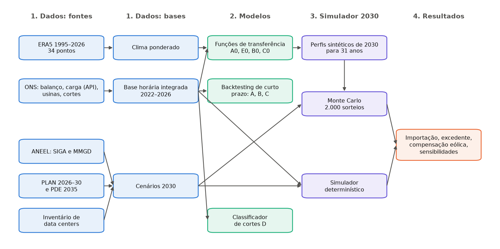
| Etapa | Módulo | Entrada | Saída |
|---|---|---|---|
| Coleta | src/collect/* | APIs e portais oficiais | data/raw/ e manifesto com SHA-256 |
| Integração | src/build/ne_hourly.py | brutos ONS e ERA5 | base horária do NE (data/interim/) |
| Auditoria | src/audit/run_audit.py | base integrada | relatório de qualidade, tabelas, figuras |
| Features | src/features/build.py, clima_historico.py | base integrada, ERA5 | base analítica; clima 1995–2026 |
| Modelos | src/models/backtest.py, cortes.py | base analítica | métricas de validação |
| Perfis sintéticos | src/sim/sinteticos.py | modelos A0/E0/B0/C0, clima | perfis de 2030 para 31 anos e resíduos |
| Simulador | src/sim/deterministico.py, montecarlo.py | perfis, cenários | distribuições de importação etc. |
| Validação retrospectiva | src/sim/backcast.py | perfis, níveis observados de 2022–2025 | erro da importação simulada (seção 7.4) |
| Anos 2026–2030 | src/sim/trajetorias.py, anos.py | PLAN, SIGA, PDE; perfis no calendário de cada ano | níveis por ano (anexo) e Monte Carlo do simulador interativo |
| Backtest e diagnóstico | src/sim/backtest_2026.py, diagnostico_importacao.py | balanço observado de 2026; modelos re-treinados | backtest de 2026 e causas da subestimação (seção 7.5) |
| Relatórios | src/report/* | tabelas | este documento, o relatório final e o simulador interativo |
3. Dados coletados e onde cada um entra
A coleta foi feita por scripts. Cada arquivo foi registrado num manifesto (docs/manifest/manifest.csv, 451 registros) com URL de origem, data de coleta, tamanho e hash SHA-256. No total são 469 arquivos brutos e 0,93 GB.
| Fonte / conjunto | Resolução e período | Variáveis principais | Como é usado no estudo |
|---|---|---|---|
| ONS — balanço de energia por subsistema | horária, 2022-01 → 2026-11 | carga, geração hidráulica, térmica, eólica, solar, intercâmbio | fechamento do balanço; hidráulica e térmica do simulador; intercâmbio observado |
| ONS — carga verificada (API) | 30 min → horária, 2022-01 → 2026-11 | carga global, carga líquida de MMGD, MMGD | alvo dos modelos A e A0; MMGD (E0); nível e forma da carga |
| ONS — geração por usina | horária, 2022-01 → 2026-11 | geração de cada usina, inclusive grupos MMGD | separar MMGD da solar do balanço; conferências |
| ONS — fator de capacidade por usina | horária, 2022-01 → 2026-11 | geração e capacidade de cada usina eólica/solar, coordenadas | denominador do CF; alvo dos modelos B, B0, C, C0; pesos espaciais do clima |
| ONS — constrained-off eólico e solar | 30 min → horária; eólica 2022-01+, solar 2024-04+ | geração, referência, corte apurado (GNRa) por motivo | CF potencial = (geração + GNRa)/capacidade; rótulos do classificador D |
| ONS — capacidade instalada | fotografia | unidades geradoras, datas de operação | conferência das capacidades |
| ANEEL — SIGA | fotografia 2026-11-01 | empreendimentos por fase, potência, coordenadas | pontos ERA5 (clusters); cenários eólicos de 2030 |
| ANEEL — MMGD | fotografia 2026-11-10 | potência de micro e minigeração por UF | caracterização; contém dados pessoais tarjados (só agregados) |
| Open-Meteo (ERA5) | horária, 1995-01 → 2026-11, 34 pontos | temperatura, umidade, temperatura aparente, vento a 100 m, irradiância | features de todos os modelos de carga, eólica e solar |
| IBGE — Censo 2022 | por UF | população | pesos da temperatura das capitais |
| Calendário (biblioteca holidays) | diária, 2015–2030 | feriados nacionais e estaduais, Carnaval, São João, pontes | features de calendário dos modelos de carga |
| EPE — PDE 2035 | anual | carga por subsistema, MMGD, expansão indicativa, limite de exportação | sensibilidade de carga; cenário eólico alto; limite de 21 GW |
| ONS/EPE/CCEE — PLAN 2026–2030 (PLAN, 1ª e 2ª RQ) | anual, 2026–2030 | carga do NE, MMGD, carga de data centers de Rede Básica | nível de carga e MMGD de 2030; cenários de data centers |
| Inventário documental de data centers | 17 itens | potência, definição, maturidade, fonte | componente do cenário alto; conferência das projeções |
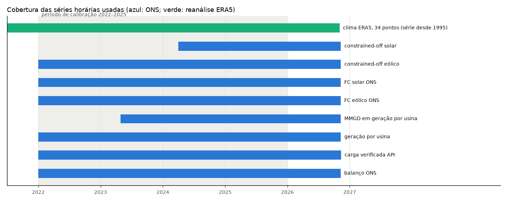
As séries do ONS cobrem de 2022 a 2026 sem lacunas internas (Figura 1). Duas exceções: o constrained-off solar só existe desde 2024-04, e a MMGD aparece na geração por usina só desde 2023-04-29.
O clima é amostrado em 34 pontos (Figura 2):
- 8 capitais: temperatura, umidade e irradiância, ponderadas pela população de cada UF. Representam a demanda.
- 16 pontos eólicos e 10 solares: escolhidos por k-means sobre as coordenadas das usinas do SIGA, ponderado pela potência. Cada usina é associada ao ponto mais próximo, e o vento de cada ponto é ponderado pela capacidade das usinas que ele representa.
A rede de usinas despachadas pelo ONS no NE soma 139 usinas ou conjuntos eólicos (32,2 GW) e 56 solares (11,4 GW).
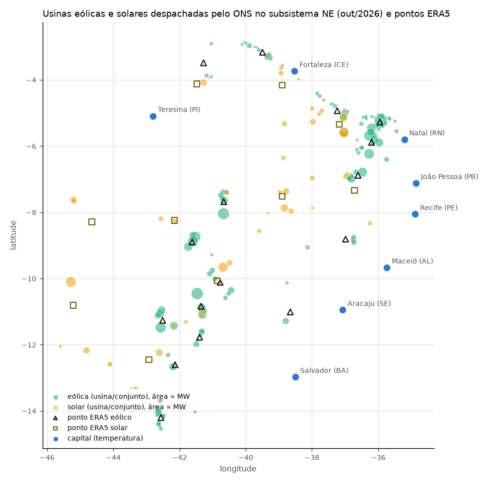
4. Tratamento e caracterização dos dados
4.1 Harmonização temporal e de unidades
Todas as séries foram levadas a uma mesma convenção: t = início da hora, no horário de Brasília (UTC−3; não há horário de verão desde 2019).
- API de carga. Informa o fim do intervalo de 30 minutos em UTC. Foi convertida para o início do intervalo em Brasília.
- Agregação para hora. Os pares de 30 minutos foram agregados pela média dos MWmed, que equivale à energia da hora em MWh.
- ERA5. As variáveis instantâneas (vento, temperatura) foram alinhadas à hora do ONS pela média dos instantes t e t+1h. A irradiância, que é média da hora anterior, foi alinhada pelo valor rotulado t+1h.
- Sem imputação. Nenhuma lacuna foi preenchida, e anomalias foram marcadas, não recortadas.
- Testes automatizados. Verificam a conversão de fuso, a agregação, MW × h = MWh, a ausência de duplicatas e a cardinalidade das junções.
4.2 Qualidade e reconciliação
- Duplicatas e lacunas. Nenhuma duplicata de chave e nenhuma lacuna interna nas bases centrais.
- Fechamento do balanço. O balanço do ONS fecha exatamente (geração − carga − intercâmbio = 0) em 2022–2025. Em jan–mai/2026 há 878 horas que não fecham, porque os dados ainda estão em consistência.
- Intercâmbio. O intercâmbio entre subsistemas reconcilia com o do balanço quando somado com sinal.
- Inconsistências. A tabela abaixo consolida as inconsistências encontradas e o que foi decidido para seguir.
| Inconsistência ou achado | Problema | Decisão | Efeito nos modelos e resultados |
|---|---|---|---|
| Balanço do ONS passa a incluir a MMGD em 29/04/2023 (degrau de ~0,5 GW na carga) | carga e solar com definições diferentes antes e depois | usar a carga da API (definição homogênea) e tratar a MMGD como série própria | modelos de carga sem quebra artificial; MMGD projetada à parte |
| Duas estimativas de MMGD do ONS diferem em 30–370 MWmed por trimestre | incerteza na parcela distribuída | usar a estimativa da API, coerente com a carga usada | documentado; sensibilidade de MMGD |
| Geração de referência do constrained-off abaixo da geração em 45,4% das horas-usina | a referência não é o potencial físico | potencial = geração + GNRa apurada (só nas horas restritas) | alvo B/B0 sem contar corte em dobro |
| Corte eólico de 0,6% (2022) para 20,2% (2025) do potencial | CF observado deixa de refletir o vento | modelar o CF potencial; classificador só descritivo | perfis de 2030 representam o recurso, não o corte histórico |
| CF potencial salta de 0,42 (2024) para 0,48 (2025) | parte é clima, parte é frota nova | treinar B0/C0 na frota recente; fator de frota no determinístico | não subestimar a geração de 2030 |
| Balanço de jan–mai/2026: 878 horas não fecham | dados ainda em consistência | 2026 fica fora da calibração do balanço | nenhuma |
| FC por usina: 3.888 horas-usina com capacidade 0 e 1.796 com geração > 105% da capacidade | registro de capacidade defasado | excluir capacidade 0 do CF agregado; não recortar valores | impacto ≈ 0,3 TWh em ~450 TWh |
| SIGA sem datas previstas para projetos fora de operação | não dá para datar a expansão | cenários eólicos por fase (operação, construção) + expansão indicativa do PDE | eólica de 2030 é hipótese de cenário |
| PDE 2035 não separa data centers por subsistema | não dá para reproduzir a projeção de DC do PDE | usar a projeção do PLAN (ONS/EPE/CCEE), que separa | cenários de DC com fonte oficial e sem dupla contagem |
| Slides da 2ª RQ do PLAN só por download manual (HTTP 403) | rastreabilidade | download manual registrado no manifesto; valores lidos dos rótulos dos gráficos | documentado |
| Dados de ERA5 sem ciclo noturno do vento (jato noturno) | o vento explica menos o padrão diário | hora como feature; resíduos com ciclo diário preservado | perfil diário do CF reproduzido |
| Sem limite de importação documentado para o NE | não há como medir risco de suprimento | reportar só horas acima de 6/8/10 GW (sensibilidade) | nenhuma afirmação de risco de déficit |
| Carga global de 2025: 13.623 MWmed na API do ONS e 13.445 no PLAN; a carga líquida da API também supera a do balanço a partir de 2025-T3 | forma (API) e nível (PLAN) vêm de conceitos ligeiramente diferentes | manter o nível do PLAN; nível da API como sensibilidade | +0,32 TWh na importação média |
| CF solar potencial agregado acima de 0,85 em 228 horas (ago–out/2026) | poderia ser capacidade defasada | investigado: o potencial passa da capacidade em menos de 1% das horas-usina; mantido sem recorte | nenhum na importação (horas de excedente) |
4.3 Carga e MMGD
Mudança de definição. A análise exploratória da carga revelou um degrau de cerca de 0,5 GW em 29/04/2023 (Figura 3). Nessa data o balanço do ONS passou a somar a MMGD estimada tanto à carga quanto à geração solar. O balanço continuou fechando, mas a série de carga mudou de definição. Se usada diretamente, essa mudança seria interpretada pelos modelos como um salto real de consumo.
- Decisão. Usar a carga da API de carga verificada do ONS, que traz separadamente a carga global, a carga líquida de MMGD e a MMGD, com definição homogênea desde 2022.
- Na modelagem, a forma horária é modelada sobre a carga bruta. A carga líquida muda de forma ao longo dos anos porque a MMGD "cava" o meio-dia cada vez mais. A MMGD tem um modelo próprio (E0).
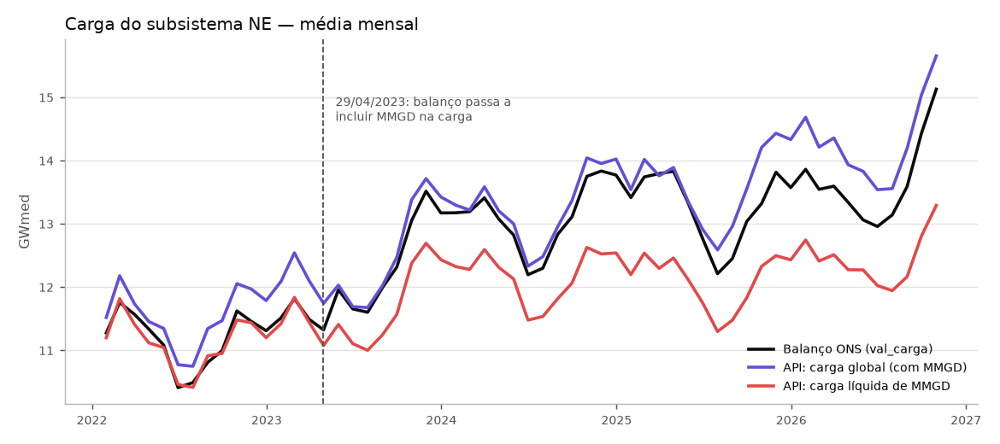
Perfis horários. Os mapas de calor hora × mês (Figura 4) e o perfil diário médio (Figura 5) mostram a complementaridade das fontes:
- Carga líquida: mínima ao meio-dia, por causa da MMGD, e máxima entre 18h e 22h.
- Eólica: forte à noite e na madrugada, com safra entre julho e novembro.
- Solar e MMGD: só durante o dia.
A janela crítica é o início da noite: a solar já caiu e a eólica ainda não subiu totalmente. Esses padrões justificam usar hora e mês como features em todos os modelos e reaparecem nos resultados de 2030.
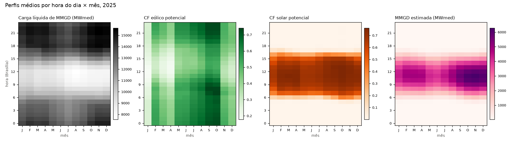
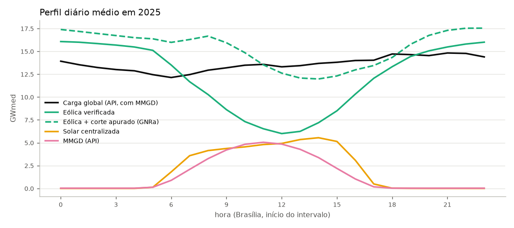
Temperatura e calendário. A carga diária cresce com a temperatura (Figura 6), com correlação de 0,64 nos dias úteis e ~3,5% de carga a mais por °C. Fins de semana e feriados ficam ~7,6% abaixo. Daí as features de temperatura (temperatura, temperatura aparente, graus-hora de resfriamento) e de calendário (dia da semana, feriados nacionais e estaduais, Carnaval, São João, pontes) dos modelos de carga.
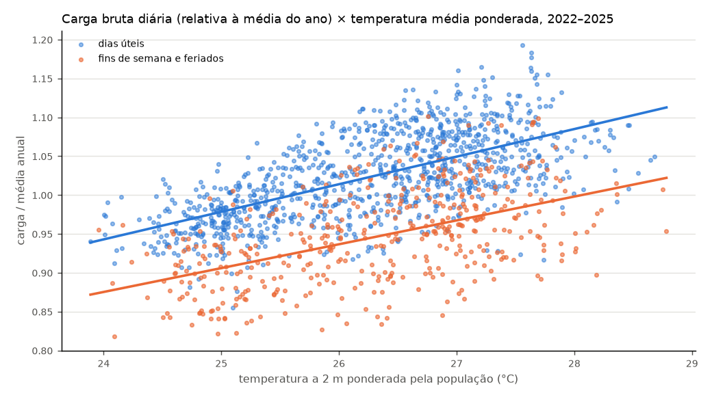
4.4 Geração eólica e cortes
Capacidade. A capacidade eólica do NE cresceu de ~20 GW para ~32 GW entre 2022 e 2026; a solar centralizada, de ~3,5 para ~11,5 GW (Figura 7). A geração por fonte está na Figura 8.
- Ponto de partida dos cenários. A capacidade observada em 2026 é a base dos cenários de 2030.
- Limite do SIGA. O cadastro aberto do SIGA não traz datas previstas para projetos fora de operação, por isso os cenários eólicos são definidos por fase do empreendimento (seção 6).
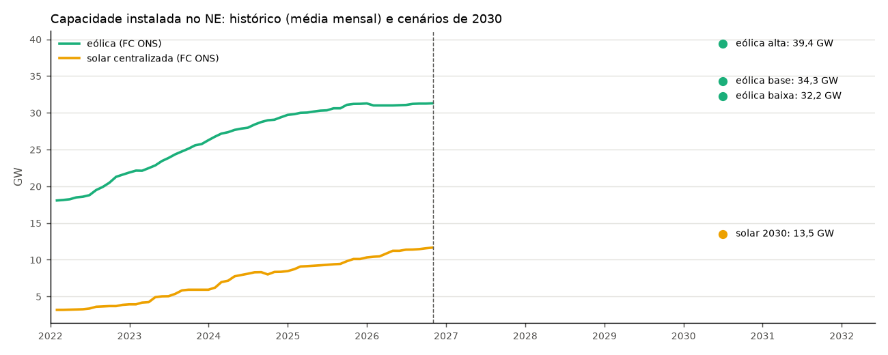
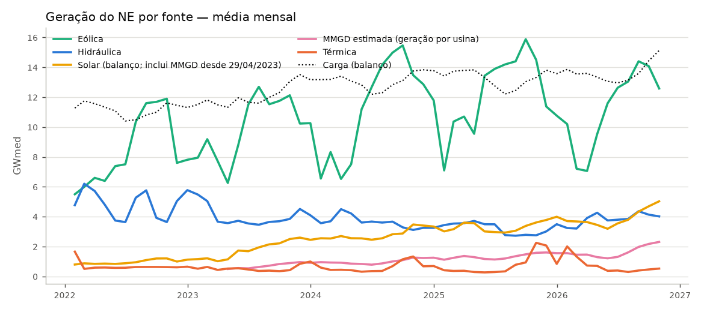
Cortes (constrained-off). O corte eólico apurado subiu de 0,6% do potencial em 2022 para 3,9% (2023), 9,1% (2024) e 20,2% em 2025 (26,0 TWh). O corte solar foi de 25,6% em 2025 (Figura 9). Em 2025 o motivo energético (ENE, excesso de oferta no sistema) passou a dominar.
Quando os cortes acontecem (Figura 10).
- Corte energético (ENE): concentra-se de dia, entre ~9h e 15h, de maio a novembro. É quando a solar, a MMGD e uma eólica ainda forte se somam a uma carga líquida baixa.
- Corte por confiabilidade (CNF): concentra-se nas manhãs de julho a outubro.
- Corte elétrico externo (REL): em 2025, vem sobretudo de um evento em fevereiro.
Esse padrão indica que o excedente atual é, em grande parte, diurno, e é nessas horas que uma carga constante de data centers absorveria energia.
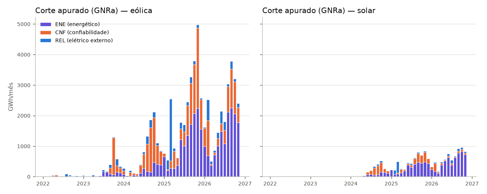
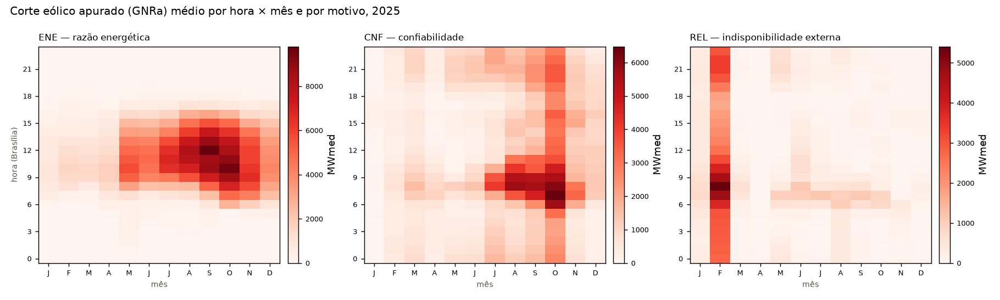
Consequência para a modelagem. O CF eólico observado deixou de refletir o vento (Figura 11).
- Correlação. A correlação entre vento³ e CF observado caiu de 0,87 (2022) para 0,58 (2025), enquanto com o CF potencial (geração + corte apurado) ela fica em 0,85–0,88.
- Alvo. Por isso o alvo dos modelos eólicos é o CF potencial: queremos o recurso físico, e o corte é justamente uma das saídas que o balanço deve revelar, não um dado de entrada.
- Por que não a geração de referência. O ONS publica uma "geração de referência", mas ela não serve como potencial: fica abaixo da geração verificada em 45,4% das horas-usina. Por isso o corte vem da GNRa, que o ONS apura apenas nas horas com restrição.
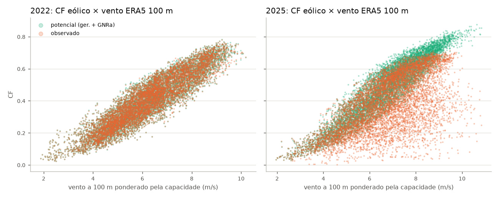
Frota mais eficiente. O CF potencial médio subiu de 0,42 (2024) para 0,48 (2025). A análise por faixa de vento mostrou duas causas: 2025 foi mais ventoso, e a frota nova tem curva de potência 5–10% maior (decisão 20). Por isso os modelos que projetam 2030 são treinados só na frota recente (2024-07 em diante), e o simulador determinístico aplica um fator de frota por ano (1,05–1,08 para 2022–2024; 1,00 para 2025).
Ciclo diurno e limitação do ERA5. O CF potencial é ~13% maior à noite e ~21% menor ao meio-dia em relação à média do dia. O vento³ do ERA5 varia menos: ~3% à noite (Figura 12). A reanálise, com resolução de ~30 km, suaviza o reforço noturno do vento observado nos parques do NE. Por isso a hora do dia é uma feature importante do modelo eólico (seção 5.4), e os resíduos reamostrados no Monte Carlo preservam o ciclo diário.
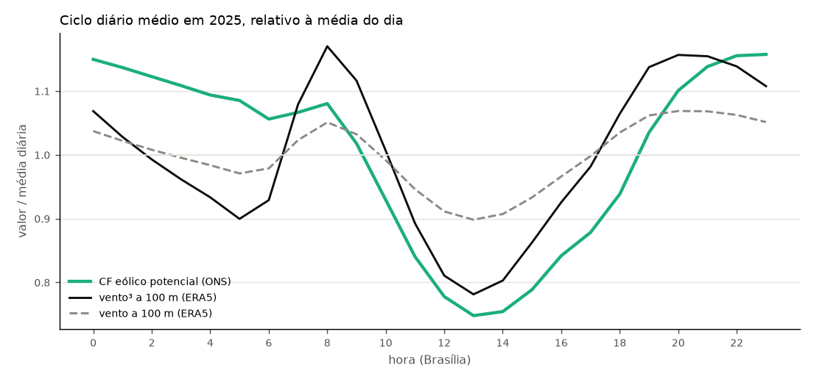
4.5 Balanço, intercâmbio e importação
O NE foi exportador líquido em todo o período, de 33 TWh em 2022 a 55 TWh em 2025. Ainda assim importou em 7–14% das horas (Figura 13).
- Horários. As importações históricas concentram-se de madrugada (~16% das horas entre 1h e 4h) e às 17h (~18%), e são raras ao meio-dia (~6%) (Figura 14).
- Consequência. Esse padrão antecipa o resultado principal: carga constante de data centers aumenta a importação justamente nas horas em que a eólica e a solar não cobrem a carga.
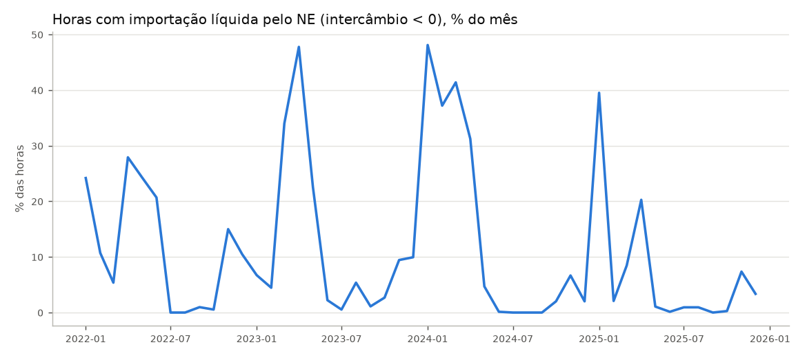
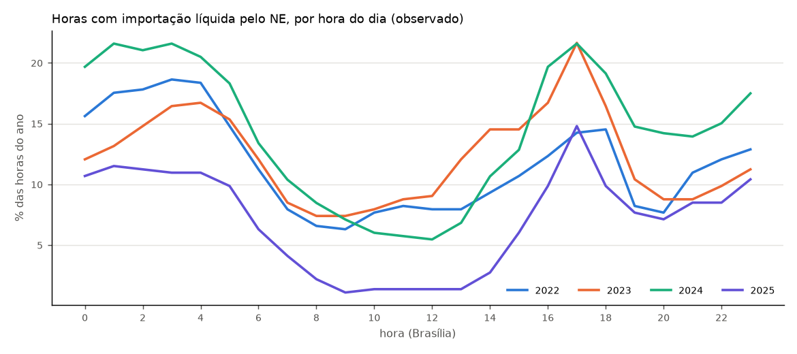
4.6 Clima de longo prazo
Os anos com dados ficam abaixo da média de vento. Pelo CF eólico que a frota atual teria em cada ano da série ERA5 de 1995–2025 (Figura 15), 2022 é o 4º ano menos ventoso de 31, 2024 o 7º e 2023 o 11º; 2025 é o 23º. A média de 2022–2025 é 0,449, contra 0,460 nos 31 anos.
- Variação entre anos. O CF eólico potencial que a frota atual teria em cada ano varia de 0,39 (2009) a 0,52 (2012).
- Risco. Calibrar só em 2022–2025 subestimaria anos ventosos e não mostraria anos muito fracos.
- Consequência. Por isso o Monte Carlo usa os 31 anos.
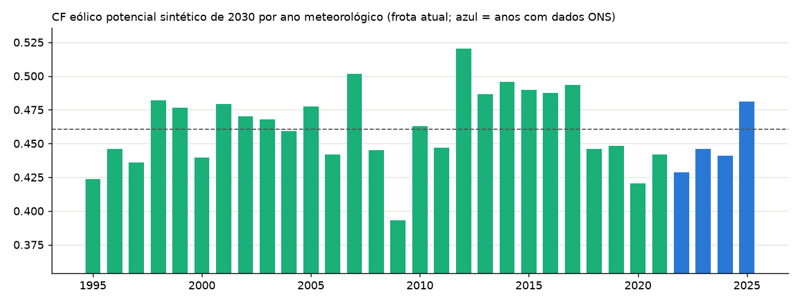
4.7 Data centers: da pesquisa documental aos cenários
O PDE 2035 não serve para os cenários de data centers. A pergunta exige saber quanta carga de data centers entra no NE. O PDE 2035, na carga de referência, embute data centers, mas não os separa por subsistema nem por ano.
A fonte usada: a previsão de carga do PLAN 2026–2030 (ONS/EPE/CCEE). Ela publica a carga de data centers de Rede Básica por subsistema. O critério soma 100% dos acessos com contrato assinado e 50% dos que têm parecer favorável.
- Revisões. Para o NE em 2030, a projeção passou de 716 MWmed (PLAN, nov/2025) para 1.291 (1ª RQ, mar/2026) e 2.098 MWmed (2ª RQ, jul/2026), dos quais 1.886 já contratados (Figura 16).
- Inventário. Paralelamente, montamos um inventário documental de 17 projetos (portarias do MME, ANEEL, imprensa setorial), com a definição de potência de cada fonte e um grau de maturidade (M0 a M3).
- Peso do principal projeto. O maior projeto com obra iniciada (Pecém fase 1) tem ~300 MW de consumo previsto a partir de 2027.
Decisões tomadas com o usuário.
- Caso-base. Carga do PLAN sem os data centers de Rede Básica: 18.278 − 2.098 = 16.180 MWmed.
- Cenários de data centers. Conservador (só contratos), central (2ª RQ) e alto (contratos + 100% dos pareceres + anúncios com MW). O PDE ficou como sensibilidade.
Como a projeção oficial já é "MWmed de carga na rede", não se aplica PUE (eficiência do data center) sobre ela; PUE e utilização só entram para os itens do inventário.
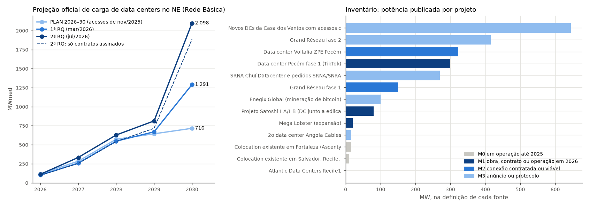
5. Modelos implementados
5.1 O algoritmo: HistGradientBoosting (HGB)
Todos os modelos de machine learning usam o HistGradientBoostingRegressor (e o classificador equivalente) do scikit-learn.
Como funciona.
- É um gradient boosting de árvores de decisão: o modelo é uma soma de muitas árvores pequenas, cada uma ajustada para corrigir o erro das anteriores.
- A versão "Hist" agrupa cada feature em até 255 faixas (histogramas), o que torna o treino rápido mesmo com dezenas de milhares de horas.
Por que foi escolhido.
- Captura relações não lineares (a curva de potência eólica é em forma de S) e interações (hora × mês) sem que seja preciso especificá-las.
- Não exige normalização das variáveis.
- Lida bem com tabelas de algumas dezenas de features.
- É o tipo de modelo recomendado pelo plano do projeto ("um modelo principal de árvores").
- Redes neurais (LSTM, MLP) ficaram fora do escopo obrigatório.
Hiperparâmetros. Fixos, sem busca, para evitar ajuste fino à amostra de teste: 400 iterações, taxa de aprendizado 0,05, até 31 folhas por árvore, ≥ 40 amostras por folha, regularização L2 = 1, parada antecipada automática e semente 20261111.
Baselines. Todo modelo é comparado a baselines ingênuos que qualquer operador usaria:
- sazonal semanal: o valor da mesma hora uma semana antes;
- persistência: o valor h horas antes;
- perfil climatológico: a média por mês e hora.
Só se considera que o modelo funciona quando ele supera o baseline de forma consistente.
5.2 Catálogo de modelos
Os modelos têm três papéis, conforme o acordo do projeto: (1) validação acadêmica de previsão de curto prazo; (2) função de transferência clima → sistema, que gera os perfis de 2030; (3) classificação de cortes. Nenhum modelo projeta 2030 por recursão hora a hora, o que acumularia erro.
| Modelo | Papel | Alvo (saída) | Features (entradas) | Treino | Validação | Saída | Onde é usado |
|---|---|---|---|---|---|---|---|
| A (h = 1 h, 24 h) | validação: previsão de curto prazo | carga líquida horária (MWmed) | calendário, temperatura, temp. aparente, umidade, CDH, irradiância, lags do alvo (≥ h) e médias móveis | toda a história antes do mês testado | 12 dobras mensais em 2025 | previsão da carga | só validação acadêmica |
| B (h = 1 h, 24 h) | validação | CF eólico potencial | hora, mês, dia do ano, vento e vento³ a 100 m, lags e médias móveis | idem | idem | previsão do CF | só validação |
| C (h = 1 h, 24 h) | validação | CF solar observado | hora, mês, dia do ano, irradiância, temperatura, lags | idem | idem | previsão do CF | só validação |
| A0 | função de transferência | carga bruta / média do ano | hora, dia da semana, mês, feriado nacional, ponto facultativo, temperatura (da hora e média de 24 h), irradiância nas capitais | 2022–2025 | deixando um ano de fora | forma horária da carga | perfis de 2030 (Monte Carlo) |
| E0 | função de transferência | MMGD / nível anual (média móvel de 365 dias) | hora, mês, irradiância nas capitais e nos polos | 2022-01 → 2026-10 | deixando um ano de fora | forma horária da MMGD | perfis de 2030 |
| B0 | função de transferência | CF eólico potencial | hora, mês, vento a 100 m em cada um dos 16 polos | 2024-07 → 2026-10 (frota recente) | temporal: 2025 e 2026 fora do treino | CF eólico horário | perfis de 2030; fator de frota do determinístico |
| C0 | função de transferência | CF solar potencial | hora, mês, irradiância nos polos, temperatura | 2024-07 → 2026-10 | temporal | CF solar horário | perfis de 2030; fator de frota |
| D | classificador (viabilidade) | hora com corte > 1% da capacidade, por motivo | potencial eólico e solar, carga, MMGD, excedente bruto previsto, capacidades, calendário | 2023–2024 e 2024-07 → 2025 | temporal: 2025 e 2026 | probabilidade de corte | só descritivo (não entra no simulador) |
5.3 Previsão de curto prazo (validação acadêmica)
Objetivo. Mostrar que as relações entre clima, calendário, carga e geração foram de fato capturadas.
Desenho.
- Para cada hora de 2025, prevemos o valor 1 hora e 24 horas à frente usando só informação disponível no momento da previsão: lags do alvo de pelo menos h horas e médias móveis que terminam na origem.
- O backtesting é de origem móvel: 12 dobras mensais, cada uma treinada com todo o histórico anterior ao mês testado.
- O clima do instante-alvo é o observado (ERA5), equivalente a uma previsão meteorológica perfeita. Por isso o desempenho é um limite superior do que se obteria em operação.
| Alvo | h | MAE HGB | Melhor baseline (MAE) | Ganho | Meses em que vence |
|---|---|---|---|---|---|
| A_carga_liquida | 1 | 139 | sazonal_semanal (468) | 70% | 12/12 |
| A_carga_liquida | 24 | 299 | sazonal_semanal (468) | 36% | 11/12 |
| B_cf_eolico_pot | 1 | 0,015 | persistencia_1h (0,025) | 41% | 12/12 |
| B_cf_eolico_pot | 24 | 0,044 | persistencia_24h (0,082) | 47% | 12/12 |
| C_cf_solar | 1 | 0,018 | sazonal_diario (0,048) | 62% | 12/12 |
| C_cf_solar | 24 | 0,042 | persistencia_24h (0,048) | 13% | 10/12 |
Resultado.
- O HGB vence o melhor baseline em 10 a 12 dos 12 meses para todos os alvos (Figura 17).
- O ganho é grande para carga e eólica e pequeno (13%) para a solar a 24 h. Para a solar, a persistência de 24 h já é muito boa, porque o sol de hoje se parece com o de ontem.
- A Figura 18 mostra uma semana típica.
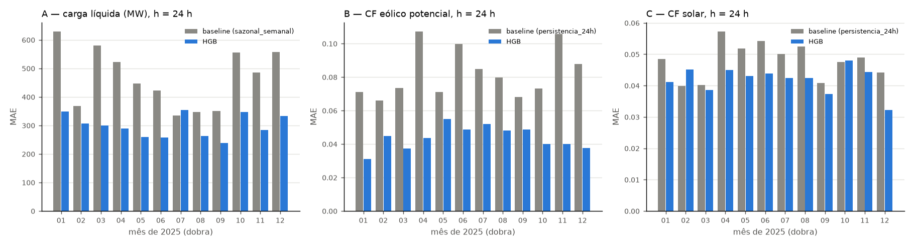
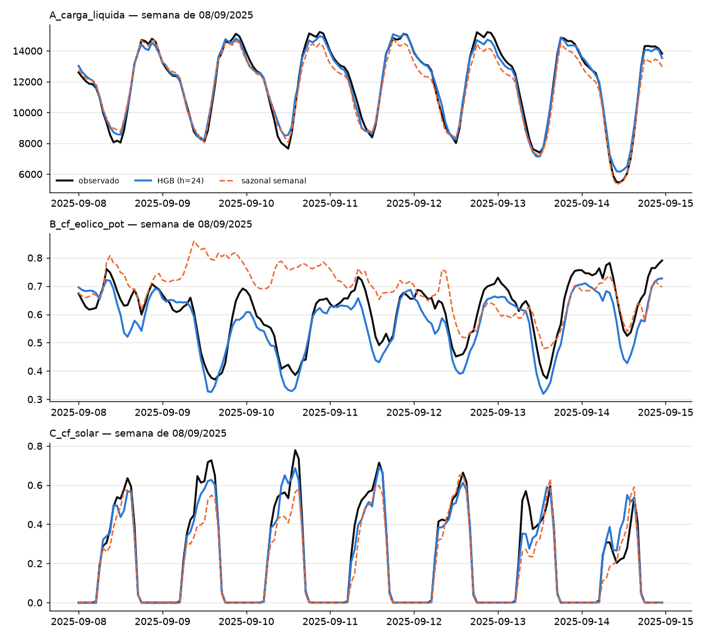
5.4 Funções de transferência clima → sistema (o coração da projeção)
Por que são necessárias. Para 2030 não temos carga nem geração observadas. A estratégia é:
- Aprender, nos dados de 2022–2026, como o clima e o calendário determinam a forma horária de cada série.
- Aplicar esse aprendizado ao clima de cada um dos 31 anos meteorológicos (1995–2025), dispostos no calendário de 2030.
- Multiplicar a forma pelo nível de 2030 dado pelos cenários (carga e MMGD do PLAN, capacidades do SIGA/PDE).
Esses modelos não usam lags do alvo, porque em 2030 não há "valor da hora anterior" observado.
As quatro funções.
- A0 — forma da carga bruta (carga ÷ média do ano). Validada deixando um ano inteiro de fora, com a forma renormalizada a média 1 como no simulador: MAE de 2,5–3,0% contra 2,8–3,9% do perfil médio.
- Com a carga líquida o erro chegaria a 9,4%, porque a forma muda com a MMGD. Isso confirmou a decisão da seção 4.3.
- E0 — forma da MMGD (MMGD ÷ média móvel de 365 dias, o que remove o crescimento da capacidade; nas pontas da série o nível segue a taxa de crescimento vizinha, decisão 56). Depende da irradiância.
- B0 — CF eólico potencial. Treinado só na frota recente (2024-07 a 2025-12) e testado em 2026: MAE 0,041 contra 0,133 do perfil médio, com viés de -0,014.
- Treinado em 2022–2024 e testado em 2025, o viés seria de -0,032, efeito da frota nova. Isso justifica a janela recente.
- C0 — CF solar potencial. MAE 0,023–0,026 contra 0,028–0,035 do perfil.
Como as features foram escolhidas: ablação (decisão 55). Cada variante é re-treinada sem (ou com) uma feature e avaliada em anos ou blocos de 12 a 16 meses que não entraram no treino (src/models/ablacao.py). A comparação usa o IC95 da diferença de erro, por bootstrap em blocos de 7 dias. Uma feature de ruído puro serve de controle.
| Modelo | Variante (re-treinada) | Nº de features | RMSE fora da amostra | Variação do RMSE | Diferença (IC95) |
|---|---|---|---|---|---|
| A0 | anterior | 17 | 0,0377 | — | referência |
| A0 | adotada | 8 | 0,0366 | -3,0% | melhor |
| A0 | anterior + ruído (controle) | 18 | 0,0377 | -0,1% | não significativa |
| A0 | anterior sem cdh24 | 16 | 0,0377 | 0,0% | não significativa |
| A0 | anterior sem dia_ano | 16 | 0,0369 | -2,1% | não significativa |
| A0 | anterior sem clima | 12 | 0,0429 | +13,7% | pior |
| A0 | adotada sem temp_mm24 | 7 | 0,0371 | -1,6% | não significativa |
| A0 | adotada sem temperature_2m | 7 | 0,0367 | -2,8% | não significativa |
| E0 | anterior | 6 | 0,0600 | — | referência |
| E0 | adotada | 4 | 0,0583 | -2,8% | melhor |
| E0 | anterior + ruído (controle) | 7 | 0,0598 | -0,4% | melhor |
| E0 | anterior sem dia_ano | 5 | 0,0594 | -0,9% | não significativa |
| E0 | adotada sem mes | 3 | 0,0618 | +3,0% | pior |
| B0 | anterior | 5 | 0,0559 | — | referência |
| B0 | adotada | 18 | 0,0514 | -8,0% | melhor |
| B0 | anterior + ruído (controle) | 6 | 0,0557 | -0,3% | não significativa |
| B0 | anterior sem dia_ano | 4 | 0,0536 | -4,0% | melhor |
| B0 | hora, mês, vento médio | 3 | 0,0539 | -3,5% | melhor |
| B0 | adotada sem mes | 17 | 0,0515 | -7,8% | melhor |
| C0 | anterior | 5 | 0,0477 | — | referência |
| C0 | adotada | 4 | 0,0452 | -5,3% | melhor |
| C0 | anterior + ruído (controle) | 6 | 0,0475 | -0,4% | não significativa |
| C0 | anterior sem dia_ano | 4 | 0,0452 | -5,3% | melhor |
| C0 | adotada sem temperature_2m | 3 | 0,0454 | -4,7% | melhor |
- Especificação adotada. Melhora as quatro funções: -8,0% na eólica, -5,3% na solar, -3,0% na carga e -2,8% na MMGD, com menos features em três delas.
- Dia do ano. Sai dos quatro modelos. Na eólica e na solar, com só 28 meses de treino, o modelo decorava o tempo de dias específicos, e tirá-lo reduz o erro.
- Vento por polo. Os 16 ventos a 100 m (um por polo), no lugar da média espacial e do cubo dela, são o maior ganho da eólica: a conversão em potência é não linear e os regimes de vento diferem entre litoral e interior.
- Redundâncias da carga. CDH é cópia da temperatura para árvores (função monótona); temperatura aparente, umidade e os feriados menores mudavam o erro em menos de 1%. Entra a média de 24 h da temperatura (inércia térmica); depois dela, a temperatura da hora contribui pouco, e foi mantida pelo sentido físico.
- Cuidados. As features foram escolhidas nas mesmas dobras em que o erro é medido, então os ganhos são ligeiramente otimistas. Diferenças abaixo de 1% não devem ser interpretadas: até o ruído as produz.
O que os modelos usam. A importância por permutação mede quanto o erro aumenta quando uma feature é embaralhada num modelo já treinado (Figura 19; os 16 polos são embaralhados juntos). Ela mostra em que o modelo se apoia, não se a feature deveria estar nele: antes da revisão, o dia do ano parecia importante por esse critério e, mesmo assim, piorava o modelo.
- B0: o vento domina, seguido da hora do dia, que corrige o ciclo noturno subestimado pelo ERA5.
- A0: hora e dia da semana dominam, seguidos da média de 24 h da temperatura, do mês e da irradiância.
Importância por permutação não tem interpretação causal.
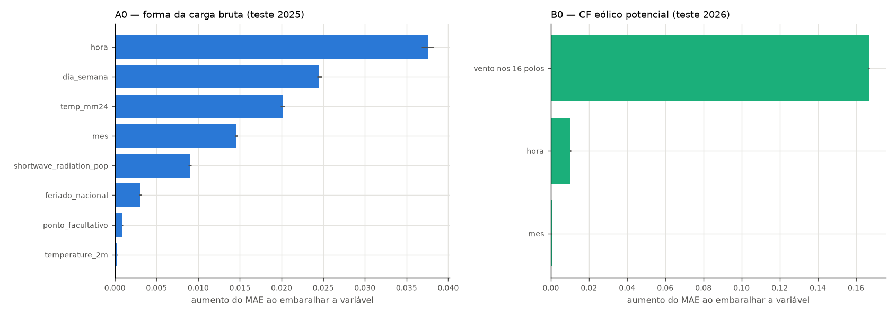
A Figura 20 mostra as previsões fora do treino. A carga acompanha o ciclo diário e semanal; com o ano fora do treino, o erro médio varia pouco entre os dias da semana (2,7% a 3,0%, decisão 55). O CF eólico diário segue as variações do vento ao longo de 2026.
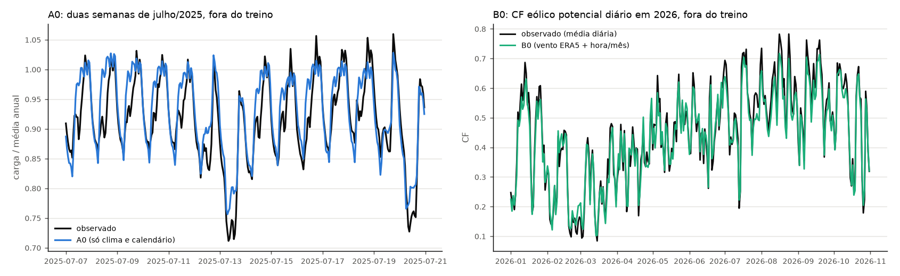
Da previsão ao perfil sintético.
- Calendário e clima. O clima de cada ano é colocado no calendário de 2030 por (mês, dia, hora); 29/02 é descartado. O clima usa pesos fixos da frota de out/2026, para que todos os anos representem a mesma população de usinas.
- Variabilidade. Como as previsões são médias condicionais, mais "lisas" que a realidade, a variabilidade que falta é recomposta com resíduos fora da amostra: erros de previsão medidos por validação cruzada mensal na janela 2024-07..2026-10, reamostrados no Monte Carlo (seção 7).
- Validação.
- O CF eólico sintético tem correlação horária de 0,97 com o observado em 2025, fora da amostra (0,99 com o modelo final, que viu 2025 no treino).
- Fora da amostra e com os resíduos, o desvio-padrão horário de 2025 fica em 0,181, contra 0,183 observado. A cauda de pouco vento é avaliada na seção 7.5.
- Só 0,05% das horas de 1995–2021 ficam fora da faixa de treino de alguma variável, ou seja, quase não há extrapolação.
5.5 Classificador de cortes (Modelo D)
Pergunta. É possível prever, com informação disponível antes, as horas em que haverá corte eólico?
Desenho.
- Rótulo: hora com corte > 1% da capacidade, separado por motivo.
- Features: só variáveis ex-ante (potencial previsto, carga, MMGD, excedente bruto previsto, capacidades, calendário). Nunca o intercâmbio ou o despacho do mesmo instante.
Resultados.
- Ordenação boa. Para o corte energético, ROC-AUC de 0,91–0,93 e PR-AUC de 0,77–0,85, contra 0,25–0,32 ao acaso.
- Calibração instável. A frequência de horas com corte subiu de 7% (2022) para 69% (2025) (Figura 21). Um modelo treinado até 2024 superestima as probabilidades de 2025, e um treinado até 2025 subestima as de 2026.
- REL não é previsível. O corte por indisponibilidade elétrica externa depende de eventos de rede que essas features não captam.
Decisão. O classificador fica como análise descritiva e não é usado para projetar probabilidades de corte em 2030. É uma redução de escopo registrada, coerente com a regra de não aplicar modelos sob mudança de regime.
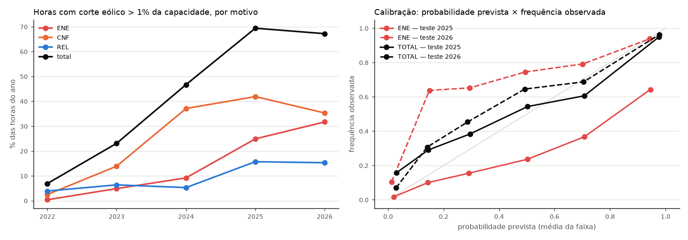
6. O simulador do balanço horário de 2030
6.1 O que é e como foi construído
O simulador é uma "contabilidade" hora a hora do NE em 2030 (8.760 horas). Para cada hora ele soma a geração de cada fonte, subtrai a carga e a carga de data centers e registra se sobra (excedente) ou falta (importação). Cada termo vem de uma etapa anterior:
| Termo do balanço | Como é gerado em 2030 | De onde vem o nível |
|---|---|---|
| Carga bruta L(t) | forma horária (A0 + resíduo) × 16.180 MWmed | 2ª RQ do PLAN: 18.278 menos 2.098 de DC |
| MMGD(t) | forma horária (E0 + resíduo) × 2.386 MWmed | 2ª RQ do PLAN |
| Eólica(t) | CF (B0 + resíduo) × capacidade do cenário | SIGA + PDE: 32,3 / 34,3 / 39,4 GW |
| Solar(t) | CF (C0 + resíduo) × 13,5 GW | SIGA (operação + construção) |
| Hidráulica(t) | regra emulada: energia diária do ano hidrológico sorteado + resposta intradiária à carga líquida | balanço ONS 2022–2025 |
| Térmica(t) | série horária do ano hidrológico sorteado | balanço ONS 2022–2025 |
| L_DC | constante (flat) no ano | 2ª RQ do PLAN e inventário |
| M(t) | Hidr + Térm + Eól + Sol + MMGD − (L + L_DC) | importação = max(0, −M); excedente = max(0, M) |
Os cenários combinam três eixos de data centers × eólica:
| Dimensão | Cenário | Valor em 2030 | Definição |
|---|---|---|---|
| Data centers | sem_dc | 0 | contrafactual sem nenhum data center de Rede Básica (inclusive os que entram desde 2026) |
| conservador | 1.886 MWmed | só contratos assinados (2ª RQ) | |
| central | 2.098 MWmed | 2ª RQ do PLAN: 100% contratos + 50% pareceres favoráveis | |
| alto | 2.753 MWmed | contratos + 100% dos pareceres + anúncios com MW (em rampa) | |
| Eólica | baixa | 32,3 GW | só usinas em operação (SIGA) |
| base | 34,3 GW | operação + construção | |
| alta | 39,4 GW | base + expansão indicativa do PDE até 2030, alocada ao NE | |
| Solar | única | 13,5 GW | operação + construção |
| Carga (sem DC) | única | 16.180 MWmed | 2ª RQ do PLAN; PDE como sensibilidade |
| MMGD | única | 2.386 MWmed | 2ª RQ do PLAN; faixa 1.939–2.718 como sensibilidade |
| Intercâmbio | — | exportação ≤ 21 GW | PDE 2035; importação sem limite documentado (6/8/10 GW em sensibilidade) |
Métricas por ano simulado.
- importação anual (TWh) e horas com importação;
- P95 horário e pico da importação (MW);
- maior sequência de horas importando;
- excedente e excedente acima do limite de exportação;
- horas com importação acima de 6/8/10 GW.
Compensação eólica. O simulador também calcula quanta capacidade eólica adicional (ΔW) compensa os data centers, por quatro critérios:
- energia anual: L_DC ÷ CF médio;
- importação anual igual à do caso sem data centers;
- horas de importação iguais;
- P95 horário igual.
A busca é feita por bisseção, porque a importação diminui de forma monótona com ΔW.
6.2 Versão determinística (4 anos observados)
Construção. A primeira versão usa os perfis observados de 2022–2025 como quatro "anos climáticos":
- a forma é a de cada ano, escalada aos níveis de 2030;
- o CF eólico e o solar são corrigidos pelo fator de frota;
- a hidráulica e a térmica repetem o despacho histórico daquele ano.
Serve de verificação simples e transparente (Figura 22).
Testes-limite automatizados.
- carga de data centers zero reproduz o caso-base;
- mais carga nunca reduz a importação;
- MW × h fecha com MWh;
- a compensação encontrada devolve a importação ao caso-base.
| DC | Importação, eólica base (TWh) | Horas, eólica base | Eólica baixa (TWh) | Eólica alta (TWh) |
|---|---|---|---|---|
| sem_dc | 2,9 | 888 | 3,4 | 2,2 |
| conservador | 5,0 | 1.336 | 5,8 | 3,7 |
| central | 5,3 | 1.396 | 6,1 | 3,9 |
| alto | 6,3 | 1.582 | 7,2 | 4,6 |
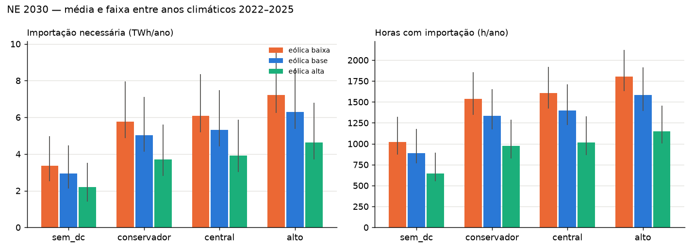
6.3 Por que não parar no determinístico
A versão determinística tem três limitações:
- só 4 anos climáticos, justamente anos pouco ventosos (seção 4.6);
- nenhuma medida de incerteza;
- extremos (picos, P95) mal representados.
Daí o Monte Carlo.
7. Monte Carlo
7.1 Propósito
O Monte Carlo transforma "um resultado por cenário" em uma distribuição condicional de resultados. Ele responde perguntas como:
- quão diferente pode ser 2030 conforme o clima do ano;
- o efeito dos data centers aparece sempre ou só em anos ruins;
- quão estável é a estimativa.
A incerteza amostrada é climática e operacional. As escolhas de cenário (quantos data centers, quanta eólica) ficam como eixos separados, porque não são aleatórias: são hipóteses de política e de mercado.
7.2 Como é feito um sorteio
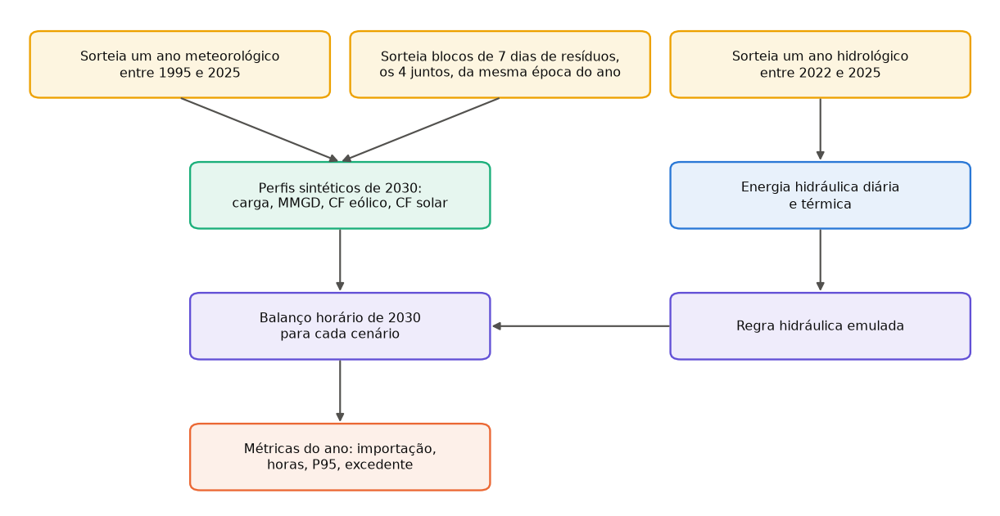
Componentes do sorteio.
- Ano meteorológico (31 opções): define os perfis sintéticos gerados pelas funções de transferência.
- Resíduos em blocos. Sequências de 7 dias de erros fora da amostra das quatro séries, sorteadas juntas e de épocas do ano parecidas (±14 dias). Isso preserva a autocorrelação e a dependência entre carga, vento e sol (por exemplo, um dia nublado reduz a solar e a MMGD ao mesmo tempo). O tamanho do bloco foi testado: 3 e 14 dias dão o mesmo resultado. A janela dos resíduos vai de 2024-07-01 a 2026-10-31, com dois anos de janeiro a outubro: de 82% a 94% da importação observada ocorre de janeiro a junho, e até 2026-11-25 essa época tinha só um ano de resíduos (decisão 56).
- Resíduos recentrados por mês. Os erros fora da amostra não têm média zero, e o viés muda com a época do ano. De cada série subtrai-se a média esperada no mês sob o próprio sorteio: CF eólico de -0,0034 a +0,0043, carga de -0,0069 a +0,0094. Na solar e na MMGD o centro é por mês e hora, para não criar geração à noite. Um centro único para o ano (versão anterior) compensava, em janeiro–junho, um viés que só existia no 2º semestre de 2024. As formas de carga e MMGD voltam a ter média 1 em cada sorteio. Sem recentrar, a importação média seria -0,03 TWh diferente.
- Ano hidrológico (2022–2025): define a energia hidráulica diária e a térmica.
- Números aleatórios comuns. O mesmo sorteio é aplicado a todos os cenários, de modo que as diferenças entre cenários são pareadas: medem o efeito do cenário no mesmo clima.
Regra hidráulica emulada (decisão do usuário).
- Por que. O despacho horário da hidráulica do NE responde às variações intradiárias da carga líquida potencial (correlação entre os desvios intradiários de 0,63 a 0,71 em 2022–2025). Repetir o despacho de um ano qualquer, sem essa resposta, quebraria a dependência entre clima e despacho.
- Como. A regra mantém a energia diária do ano hidrológico sorteado e redistribui a geração dentro do dia seguindo a carga líquida simulada, dentro dos mínimos e máximos mensais históricos (Figura 23). O coeficiente é estimado sobre a carga líquida potencial (geração + corte), a mesma grandeza a que a regra é aplicada (decisão 52), e é o de 2026: 0,21 (decisão 57).
- Por que o de 2026. O coeficiente cai quando a carga líquida oscila mais dentro do dia: de 0,42 em 2022 (desvio de 1.855 MW) a 0,16 em 2025 (4.683 MW); em 2026 sobe um pouco, porque a hidrologia também pesa. Em 2030 o desvio simulado é 6.888 MW; 2026 (5.978 MW) é o regime observado mais próximo. O coeficiente de 2026 vem de janeiro a outubro, só das horas em que o balanço fecha.
- Sensibilidades. O coeficiente do próprio ano hidrológico, a amplitude constante em MW, o despacho histórico sem resposta e a hidráulica plana.
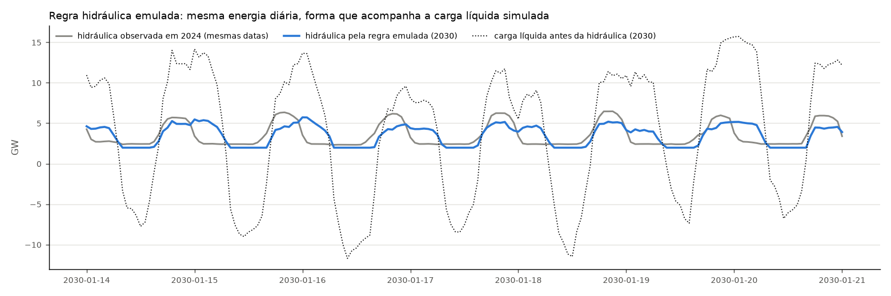
Perfil horário da hidráulica emulada. A Figura 24 mostra a média por hora do dia: à esquerda, os sorteios de 2030; à direita, a regra aplicada às parcelas observadas de 2026, o que isola o efeito da regra.
- A regra conserva a energia de cada dia, mas a distribui como a carga líquida potencial, que é alta a noite inteira e baixa ao meio-dia. Em 2030 (jan–abr), a hidráulica emulada fica em 5,0 GW de 0 h a 5 h, contra 4,0 GW no despacho observado dos anos hidrológicos, e em 2,8 GW de 8 h a 14 h, contra 3,5 GW. Com o coeficiente do próprio ano hidrológico (versão anterior), seriam 5,2 e 2,6 GW: a resposta ficava ainda mais exagerada.
- O despacho real concentra a hidráulica no início da noite. Em 2026 (jan–abr), de 18 h a 21 h, a hidráulica observada foi de 6,0 GW; a regra entrega 4,7 GW com o coeficiente adotado e 5,2 GW com o estimado sobre a carga já cortada (seção 7.5).
- A regra é uma resposta linear, sem otimização; a forma do despacho real reflete também decisões do SIN e restrições que o simulador não tem.
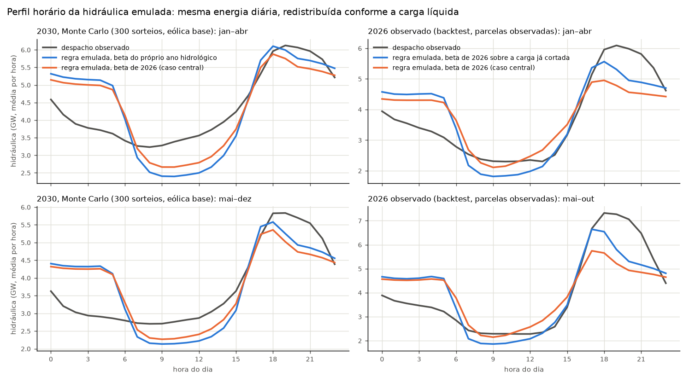
A Figura 25 mostra uma semana de 2030 decomposta, extraída de um sorteio com importação próxima da mediana: a eólica sustenta a noite, a solar e a MMGD sustentam o dia, e a importação (hachurada) aparece no fim da tarde e em noites de pouco vento.
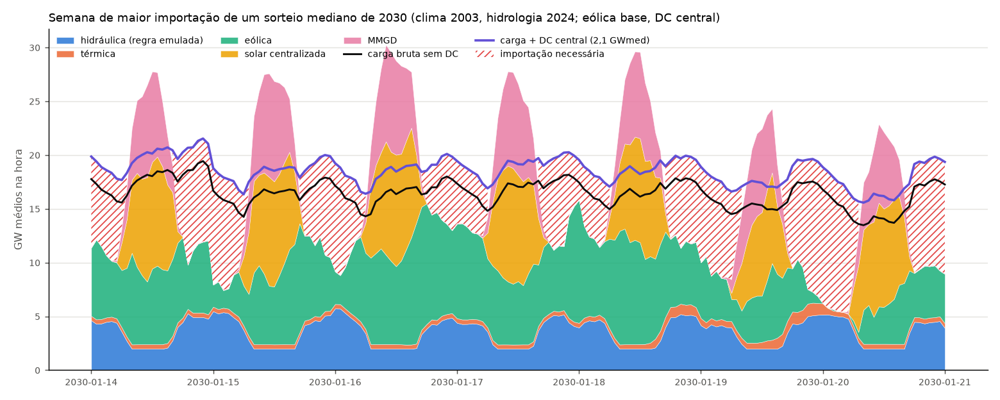
7.3 Convergência
Foram usados 2.000 sorteios (semente 20261112). De 1.500 para 2.000 sorteios, a média da importação anual mudou 0,30% e o P95, 1,66% (Figura 26).
| Sorteios | Média (TWh) | P95 (TWh) |
|---|---|---|
| 100 | 5,431 | 8,066 |
| 250 | 5,593 | 8,843 |
| 500 | 5,561 | 9,797 |
| 1.000 | 5,548 | 9,992 |
| 1.500 | 5,538 | 10,028 |
| 2.000 | 5,555 | 10,194 |

7.4 Validação retrospectiva: o simulador reproduz o passado?
Teste. Antes de usar o simulador para 2030, ele foi rodado para cada ano de 2022–2025 com o clima, o ano hidrotérmico e os níveis observados daquele ano (carga coerente com o balanço, MMGD, energia eólica e solar potenciais). Só os resíduos são sorteados (300 sorteios), sem os do próprio ano. Se as formas horárias e a regra hidráulica estiverem certas, a importação simulada deve ficar próxima da observada (Figura 27). A observada é a potencial (intercâmbio mais cortes), o conceito do simulador; entre parênteses, a realizada (decisão 54). O coeficiente da regra é o do próprio ano. As funções de transferência viram parte desses anos no treino; o erro fora da amostra está na seção 7.5.
| Ano | Importação observada, potencial (realizada) (TWh) | Simulada, regra emulada (erro) | Simulada, despacho hidráulico observado (erro) | Pico observado (GW) | Pico simulado, regra (GW) | Pico simulado, despacho observado (GW) | Corte eólico em horas de importação (importação que evitaria) (TWh) |
|---|---|---|---|---|---|---|---|
| 2022 | 1,47 (1,47) | 1,49 (+1%) | 2,00 (+36%) | 7,1 | 5,9 | 6,9 | 0,00 (0,00) |
| 2023 | 2,38 (2,39) | 2,14 (-10%) | 2,43 (+2%) | 7,2 | 7,2 | 8,3 | 0,07 (0,01) |
| 2024 | 3,30 (3,32) | 2,94 (-11%) | 3,23 (-2%) | 7,6 | 8,0 | 9,6 | 0,02 (0,01) |
| 2025 | 1,52 (1,58) | 1,40 (-8%) | 1,43 (-6%) | 7,9 | 8,2 | 9,0 | 0,37 (0,07) |
- Erro da importação anual. Com a regra emulada, de -11% a +1%, erro absoluto médio de 7%. Com o despacho hidráulico observado no próprio ano, de -6% a +36%, erro absoluto médio de 11%. Nenhuma convenção é melhor em todos os anos.
- O erro muda ao longo dos anos. Com a regra, vai de +1% em 2022 a -8% em 2025.
- Cortes em horas de importação não explicam o erro. Em 2025 foram 0,37 TWh de corte eólico, mas gerá-los reduziria a importação em só 0,07 TWh.
- Picos. Com a regra, o pico simulado difere do observado em -1,2 a +0,4 GW.
- Leitura. O nível absoluto da importação de 2030 carrega um erro estrutural dessa ordem, comparável ao efeito de trocar a convenção hidráulica. As diferenças pareadas entre cenários usam o mesmo sorteio nos dois lados e variam menos (seção 8.6).
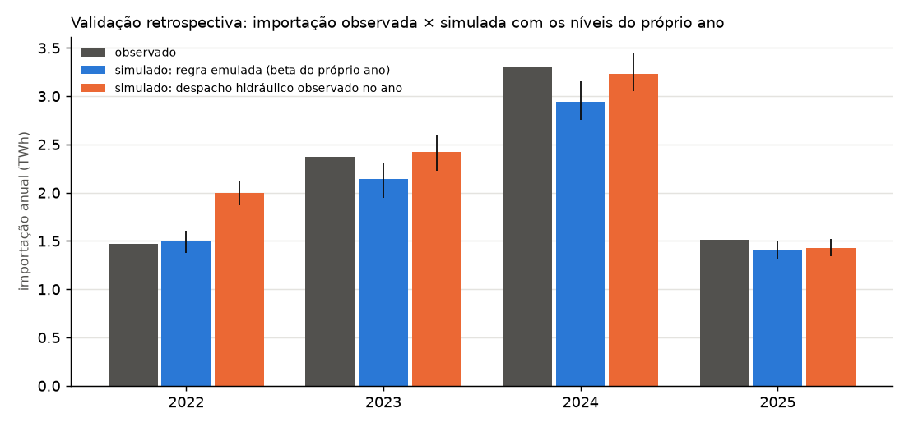
7.5 Backtest de 2026 e diagnóstico da subestimação
Teste. O simulador recebe os níveis de cenário de 2026 (anexo; DC central, porque a carga do PLAN de 2026 inclui os data centers da 2ª RQ) e é comparado ao balanço observado de janeiro a outubro, só nas 6.418 das 7.296 horas em que o balanço do ONS fecha (decisão 16). O observado "potencial" soma ao intercâmbio os cortes eólicos e solares, que é o conceito do simulador.
- (A) clima e hidrologia sorteados. Os 2.000 sorteios do Monte Carlo de 2026 (clima 1995–2025, hidrologia 2022–2025): o ano observado cai dentro da faixa? Não é uma previsão ex-ante: as funções de transferência, os resíduos e o coeficiente da regra usam dados até out/2026, e os níveis vêm de documentos de jul/2026 (PLAN) e nov/2026 (SIGA).
- (B) clima e hidrologia conhecidos. As funções de transferência são re-treinadas só com dados até 2025-12-31 (fora da amostra) e aplicadas ao ERA5 de 2026, com resíduos só de 2024–2025. A térmica é a observada e a hidráulica segue a energia diária observada de 2026, pela regra emulada (coeficiente de 2026 e, para comparação, o estimado sobre a carga já cortada) ou pelo despacho real. Os níveis continuam sendo os do cenário.
| Métrica (jan–out, horas válidas) | Observado: intercâmbio | Observado: potencial (+ cortes) | A: mediana [P5–P95] | B: regra (caso central) | B: regra, beta sobre carga já cortada | B: despacho hidráulico observado |
|---|---|---|---|---|---|---|
| Importação (TWh) | 1,68 | 1,67 | 1,17 [0,34–2,88] | 1,40 | 1,18 | 1,52 |
| Horas com importação | 547 | 524 | 425 [154–791] | 541 | 489 | 511 |
| P95 da importação horária (MW) | 2.308 | 2.305 | 980 [0–4.057] | 1.890 | 1.526 | 1.845 |
| Pico de importação (MW) | 8.048 | 8.048 | 8.737 [5.971–10.526] | 7.801 | 7.011 | 9.211 |
| Excedente (TWh) | 43,0 | 68,9 | 71,4 [61,8–82,5] | 63,8 | 63,7 | 64,0 |
- A contém o ano observado. A importação potencial de 1,67 TWh fica no percentil 72 da distribuição de A (P5–P95 0,34–2,88 TWh).
- B subestima. Com o clima e a hidrologia de 2026, o simulador dá 1,40 TWh com a regra do caso central (-16%). A forma horária de M é boa: correlação 0,96 e sinal certo em 98% das horas. Os extremos ficam curtos: o P95 da importação horária simulada é 82% do observado.
- Não é o nível médio. O M médio de B fica 744 MW abaixo do observado, o que aumentaria a importação. A decomposição abaixo fecha esse viés; a parcela "carga: balanço × API" é a diferença entre os dois conceitos de carga (decisão 41). Esse viés de nível encobre parte do erro de forma: com os níveis observados, o erro de 2026 é maior (teste 2, abaixo).
| Parcela | Observado (MWmed) | Simulado B (MWmed) | Efeito em M (MWmed) |
|---|---|---|---|
| carga bruta (com DC) | 14.303 | 14.008 | +295 |
| MMGD | 1.821 | 1.693 | -128 |
| eólica potencial | 14.852 | 14.369 | -482 |
| solar potencial | 3.118 | 3.115 | -3 |
| hidráulica | 3.917 | 3.911 | -6 |
| térmica | 649 | 649 | 0 |
| carga: balanço do ONS × API (decisão 41) | — | — | -419 |
| total = viés médio de M (B − observado) | — | — | -744 |

Esperado ou erro de metodologia? Três testes (src/sim/diagnostico_importacao.py) separam as causas.
1. Coeficiente da regra hidráulica: dois erros de método, corrigidos (decisões 52 e 57).
- Primeiro problema (decisão 52). O coeficiente beta era estimado sobre a carga líquida realizada, com a eólica e a solar já cortadas. A regra, porém, é aplicada à carga líquida potencial do simulador, que não tem corte. Com corte alto, a carga líquida potencial oscila muito mais dentro do dia. Multiplicar essa oscilação maior por um beta medido na oscilação menor exagera a resposta: a hidráulica vai demais para as horas de carga líquida alta, e a importação cai. Desde 2026-11-17 o beta é estimado sobre a carga líquida potencial. Ele fica próximo do anterior em 2022 e bem menor a partir de 2024:
| Ano | Corte eólico (%) | Beta sobre carga líquida realizada | Beta sobre carga líquida potencial | Desvio intradiário, realizada (MW) | Desvio intradiário, potencial (MW) |
|---|---|---|---|---|---|
| 2022 | 0,6 | 0,43 | 0,42 | 1.815 | 1.855 |
| 2023 | 3,9 | 0,35 | 0,33 | 2.135 | 2.294 |
| 2024 | 9,1 | 0,37 | 0,27 | 2.615 | 3.461 |
| 2025 | 20,1 | 0,27 | 0,16 | 2.598 | 4.683 |
| 2026 | 21,1 | 0,37 | 0,21 | 3.151 | 5.978 |
- Segundo problema (decisão 57). O beta cai quando a carga líquida oscila mais dentro do dia, porque a hidráulica tem amplitude limitada: cai de 2022 a 2025 (tabela) e, em todos os anos, dos dias de menor para os de maior oscilação (em 2026, de 0,27 para 0,19). Em 2026 o beta médio é maior que em 2025 apesar da oscilação maior: a hidrologia também pesa. Em 2030 a carga líquida simulada oscila 6.888 MW, e o simulador ainda aplicava o beta de cada ano hidrológico (0,16–0,42), medido em regimes de oscilação bem menor. Desde 2026-11-25 o caso central usa o de 2026 (0,21), o ano observado com a oscilação mais próxima (5.978 MW). Na validação retrospectiva cada ano continua com o próprio beta, que é o do regime em que ele ocorreu.
- Validação retrospectiva com o beta de cada ano (mesmos sorteios da seção 7.4):
| Ano | Observado (TWh) | Beta sobre carga realizada (erro) | Beta sobre carga potencial, do ano (erro) |
|---|---|---|---|
| 2022 | 1,47 | 1,49 (+1%) | 1,49 (+1%) |
| 2023 | 2,38 | 2,11 (-11%) | 2,14 (-10%) |
| 2024 | 3,30 | 2,72 (-18%) | 2,94 (-11%) |
| 2025 | 1,52 | 1,22 (-19%) | 1,40 (-8%) |
- Efeito no backtest de 2026. B passa de 1,18 TWh (beta sobre a carga já cortada) para 1,40 TWh (despacho observado: 1,52 TWh).
- Com as formas observadas, a regra corrigida acerta. Aplicada às parcelas observadas, a regra com o beta do ano erra a importação em -7% a 0% em 2024–2026. Com o beta sobre a carga realizada, errava -19% a -8%.
2. Formas horárias: onde está o erro que sobra. Com os níveis observados de cada ano, a forma simulada de cada parcela é trocada pela observada. As funções de transferência foram re-treinadas sem o próprio ano, e os resíduos sorteados não incluem os dele. É, portanto, o erro fora da amostra do método. A importação observada é a potencial (intercâmbio mais cortes), com a eólica do balanço do ONS mais o corte apurado (decisão 54).
| Importação (TWh, erro) | 2022 | 2023 | 2024 | 2025 | 2026 |
|---|---|---|---|---|---|
| Observado (geração potencial) | 1,47 | 2,38 | 3,30 | 1,52 | 1,67 |
| Método atual (formas simuladas + resíduos, beta do ano) | 1,44 (-2%) | 2,19 (-8%) | 3,23 (-2%) | 1,30 (-15%) | 1,21 (-27%) |
| Mesmas formas e resíduos, beta sobre carga realizada | 1,43 (-3%) | 2,16 (-9%) | 3,00 (-9%) | 1,12 (-26%) | 1,02 (-39%) |
| Formas simuladas sem resíduos, beta do ano | 1,23 (-17%) | 1,94 (-18%) | 2,85 (-14%) | 1,05 (-31%) | 1,07 (-36%) |
| … só a forma eólica observada | 1,03 (-30%) | 2,05 (-14%) | 3,04 (-8%) | 1,20 (-21%) | 1,36 (-18%) |
| … só a forma da carga observada | 1,28 (-13%) | 1,97 (-17%) | 2,76 (-16%) | 1,30 (-14%) | 1,20 (-28%) |
| … só as formas solar e MMGD observadas | 1,30 (-12%) | 2,04 (-14%) | 3,07 (-7%) | 1,09 (-28%) | 1,12 (-33%) |
| Todas as formas observadas, beta sobre carga realizada | 1,23 (-16%) | 2,15 (-10%) | 3,03 (-8%) | 1,35 (-11%) | 1,34 (-19%) |
| Todas as formas observadas, beta do ano | 1,24 (-16%) | 2,18 (-8%) | 3,20 (-3%) | 1,51 (0%) | 1,55 (-7%) |
| Formas simuladas sem resíduos, despacho hidráulico observado | 1,59 (+8%) | 2,12 (-11%) | 3,02 (-8%) | 1,09 (-28%) | 1,21 (-27%) |
| Erro da eólica simulada no quintil de menos vento (MW) | -15 | +244 | +462 | +398 | +575 |
| P5 horário da eólica: observado / simulado com resíduos (MW) | 3.245 / 2.765 | 3.486 / 3.316 | 3.088 / 3.165 | 5.227 / 5.107 | 4.623 / 4.734 |
- Resultado. Com o método atual (beta do ano e resíduos), o erro da importação vai de -27% a -2%, sempre de subestimação, e cresce nos anos mais recentes (-15% em 2025, -27% em 2026).
- Os resíduos importam. Sem eles o erro seria de -36% a -14%: as funções de transferência preveem médias condicionais, mais lisas que a realidade.
- Nenhuma parcela explica sozinha o que sobra. Trocando uma forma simulada pela observada, sem resíduos, a importação muda:
- eólica: -0,19 a +0,29 TWh, maior em 2026;
- carga: -0,09 a +0,25 TWh, com sinal variável;
- solar e MMGD: +0,04 a +0,22 TWh. O que sobra é também a coincidência entre calmaria, carga alta e fim do sol, que resíduos sorteados por época do ano só reproduzem em parte.
- Cauda de pouco vento: a limitação da decisão 53 não se confirma. O P5 horário da eólica simulada, com resíduos, fica entre -480 e +111 MW do observado (-120 a +111 MW em 2024–2026). A versão anterior apontava 314–473 MW a mais em 2024–2026. O que mudou:
- a eólica "observada" era a das usinas com FC multiplicada por um fator anual, o que a subestimava em 137–262 MW no P5, porque as usinas sem FC geram relativamente mais nas calmarias (decisão 54);
- o modelo B0 passou a usar o vento de cada um dos 16 polos, em vez de uma média espacial (decisão 55);
- os resíduos cobrem mais um ano e são recentrados por mês (decisão 56). Nas horas de menos vento observado (quintil inferior) a eólica simulada sem resíduos ainda fica -15 a +575 MW acima, o que é esperado de qualquer modelo de média quando se escolhem as horas pelo valor observado.
3. O que é esperado.
- Um único ano não testa a distribuição: o observado de 2026 está no percentil 72 de A.
- Cortes em horas de importação pesam pouco. Em 2025 foram 0,37 TWh, mas gerá-los reduziria a importação em só 0,07 TWh, porque o corte quase sempre excede a importação da hora.
- A diferença entre os conceitos de carga (API × balanço) muda o nível de M, mas no sentido de aumentar a importação simulada.
- O momento exato das calmarias de um ano não é previsível pelo ERA5 com uma função de transferência média.
Conclusão.
- Erros de método, corrigidos. Coeficiente da regra (decisões 52 e 57), importação observada inflada (decisão 54), features (decisão 55) e resíduos (decisão 56). Com as formas observadas, a regra reproduz a importação de 2024–2026 com erro de -7% a 0%.
- O que resta. O método ainda subestima a importação dos anos recentes fora da amostra. O nível de 2030 tende a estar subestimado, menos do que se supunha antes da revisão.
- Consequência para 2030 (tabela; mesmos sorteios, DC central, eólica base). A importação média é de 5,55 TWh com o beta de 2026, contra 5,36 com o de cada ano hidrológico. O efeito dos data centers muda menos: 2,38 contra 2,32 TWh.
| Coeficiente da regra | Eólica | Importação, DC central (TWh) | Importação, sem DC (TWh) | Efeito dos DC (TWh) |
|---|---|---|---|---|
| beta por ano hidrológico, carga realizada (decisão 34) | baixa | 5,94 | 3,34 | 2,60 |
| beta por ano hidrológico, carga realizada (decisão 34) | base | 5,21 | 2,93 | 2,28 |
| beta por ano hidrológico, carga realizada (decisão 34) | alta | 3,88 | 2,17 | 1,71 |
| beta por ano hidrológico, carga potencial (decisão 52) | baixa | 6,10 | 3,46 | 2,64 |
| beta por ano hidrológico, carga potencial (decisão 52) | base | 5,36 | 3,04 | 2,32 |
| beta por ano hidrológico, carga potencial (decisão 52) | alta | 3,99 | 2,26 | 1,74 |
| beta de 2026 (caso central, decisão 57) | baixa | 6,32 | 3,61 | 2,71 |
| beta de 2026 (caso central, decisão 57) | base | 5,55 | 3,17 | 2,38 |
| beta de 2026 (caso central, decisão 57) | alta | 4,15 | 2,36 | 1,79 |
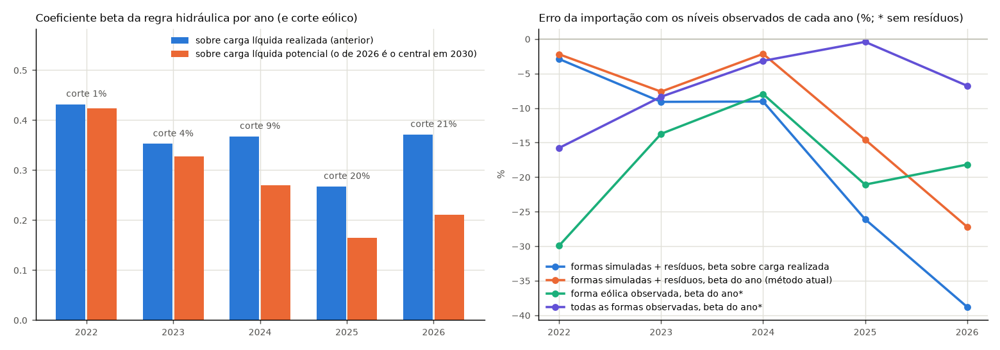
8. Resultados
8.1 Distribuições de 2030
| DC | L_DC (MWmed) | Importação TWh/ano [P5–P95] | Horas com importação | P95 horário (MW) | Pico (MW) | Excedente (TWh) | Excedente > 21 GW (TWh) |
|---|---|---|---|---|---|---|---|
| sem_dc | 0 | 3,2 [1,1–6,4] | 918 | 2.932 | 10.720 | 93 | 4,1 |
| conservador | 1.886 | 5,3 [2,2–9,7] | 1.321 | 4.783 | 12.606 | 79 | 2,6 |
| central | 2.098 | 5,6 [2,4–10,2] | 1.372 | 4.993 | 12.818 | 77 | 2,4 |
| alto | 2.753 | 6,5 [3,0–11,6] | 1.541 | 5.648 | 13.473 | 72 | 2,0 |
Importação média (TWh/ano) por cenário de data centers × eólica:
| DC \ eólica | baixa (32,3 GW) | base (34,3 GW) | alta (39,4 GW) |
|---|---|---|---|
| sem_dc | 3,6 | 3,2 | 2,4 |
| conservador | 6,0 | 5,3 | 3,9 |
| central | 6,3 | 5,6 | 4,1 |
| alto | 7,4 | 6,5 | 4,9 |
As faixas P5–P95 são largas (Figura 30): o mesmo cenário central pode resultar em 2,4 ou 10,2 TWh conforme o clima e a hidrologia. As curvas de cenários diferentes, porém, ficam claramente separadas.

8.2 O efeito dos data centers
Comparando cada sorteio consigo mesmo (diferença pareada):
| DC | eólica | Δ importação TWh [P5–P95] | Δ horas com importação |
|---|---|---|---|
| conservador | baixa | 2,4 [1,3–3,6] | 461 |
| conservador | base | 2,1 [1,1–3,3] | 402 |
| conservador | alta | 1,6 [0,7–2,7] | 297 |
| central | baixa | 2,7 [1,5–4,1] | 520 |
| central | base | 2,4 [1,3–3,7] | 454 |
| central | alta | 1,8 [0,8–3,0] | 335 |
| alto | baixa | 3,8 [2,1–5,6] | 713 |
| alto | base | 3,3 [1,8–5,2] | 623 |
| alto | alta | 2,5 [1,2–4,2] | 460 |
- Sempre positivo. O efeito é positivo em 100% dos sorteios (Figura 31, esquerda).
- Depende da eólica. É maior com eólica baixa: menos vento noturno significa mais horas sem cobertura.
- Peso do clima. A importação anual por ano meteorológico (Figura 31, direita) varia muito: o ano de menos vento (2009) leva a importação central a ~10 TWh, e o de mais vento (2012), a ~1,7 TWh.
- Decomposição da variância. O ano meteorológico explica 80% da variância da importação anual; o ano hidrológico, 19%; e os resíduos, 1%.
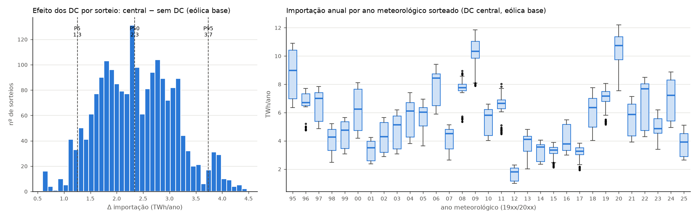
8.3 Quando a importação acontece
Em 2030, com o cenário central, a probabilidade de uma hora importar chega a 39% às 18h, contra 26% sem data centers. De madrugada fica em ~21% e ao meio-dia é praticamente zero (Figura 32). É o padrão histórico da seção 4.5, ampliado: a carga flat dos data centers "transborda" para as horas em que a geração renovável é menor que a carga.
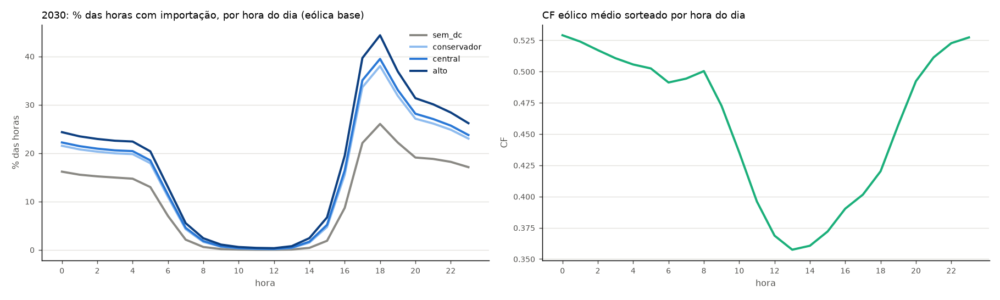
8.4 Quanto de eólica compensaria
| DC | eólica | ΔW energia (GW) | ΔW importação anual (GW) [P5–P95] | ΔW horas (GW) | razão | DC em horas de excedente |
|---|---|---|---|---|---|---|
| conservador | baixa | 4,1 | 8,8 [7,4–10,4] | 6,1 | 2,1× | 86% |
| conservador | base | 4,1 | 9,3 [7,8–11,0] | 6,5 | 2,3× | 87% |
| conservador | alta | 4,1 | 10,6 [8,8–12,7] | 7,5 | 2,6× | 91% |
| central | baixa | 4,6 | 9,8 [8,3–11,6] | 6,9 | 2,1× | 85% |
| central | base | 4,6 | 10,4 [8,7–12,4] | 7,3 | 2,3× | 87% |
| central | alta | 4,6 | 11,9 [9,8–14,2] | 8,4 | 2,6× | 90% |
| alto | baixa | 6,0 | 13,1 [11,0–15,6] | 9,1 | 2,2× | 84% |
| alto | base | 6,0 | 13,9 [11,6–16,6] | 9,6 | 2,3× | 86% |
| alto | alta | 6,0 | 15,9 [13,1–19,0] | 11,2 | 2,7× | 90% |
A Figura 33 mostra a curva de importação em função da eólica adicional.
- Retornos decrescentes. Cada GW a mais reduz a importação cada vez menos, porque as horas de importação que restam são as de vento fraco.
- Compensação em energia não basta. Compensar a energia anual (4,6 GW) ainda deixa ~4,3 TWh de importação, contra 3,2 TWh sem data centers (curva com 300 sorteios comuns).
- Compensação temporal. Igualar a importação exige ~10,4 GW.
- Frota maior, razão maior. A razão entre os dois critérios fica entre 2,1 e 2,7 e cresce com a frota.
Essa é a resposta quantitativa à regra de "separar compensação energética de compensação temporal".
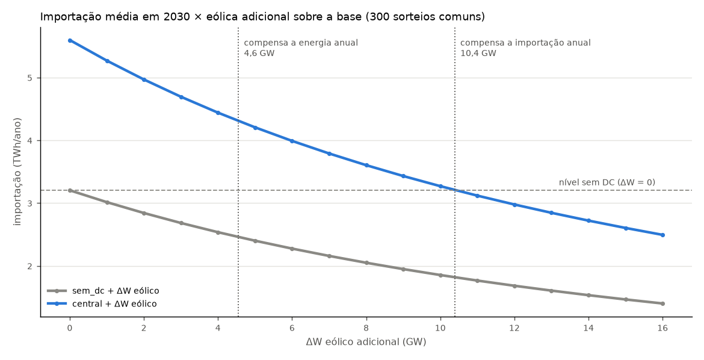
8.5 Excedente e limites de intercâmbio
- Exportação. O NE segue exportando ~77 TWh/ano no cenário central. Os data centers reduzem o excedente acima do limite de exportação de 21 GW de 4,1 para 2,4 TWh/ano.
- Importação. Não há limite documentado, então reportamos a exposição (horas acima de cada patamar e fração dos anos com pelo menos uma hora acima). Não é probabilidade de déficit.
| DC (eólica base) | > 6 GW | > 8 GW | > 10 GW |
|---|---|---|---|
| sem_dc | 162 h / 100% | 53 h / 97% | 9 h / 71% |
| conservador | 331 h / 100% | 154 h / 100% | 49 h / 97% |
| central | 353 h / 100% | 170 h / 100% | 57 h / 97% |
| alto | 428 h / 100% | 222 h / 100% | 86 h / 99% |
Como ler a tabela.
- O maior fluxo de importação observado em 2022–2025 foi de 7,9 GW, e fluxo não é capacidade.
- Nos níveis históricos, o pico simulado com a regra emulada fica de -1,2 a +0,4 GW do observado (seção 7.4).
- Os picos de 2030 passam desse patamar já sem data centers (10,7 GW em média). Isso vem do crescimento da carga com a térmica mantida no despacho histórico: 540–771 MWmed de média anual e máximo horário de 3,7 GW. O redespacho térmico ou hidráulico que ocorreria nessas horas não é representado.
- A tabela mede quanto da necessidade simulada passaria de cada patamar se nada mais respondesse.
8.6 Sensibilidades
| Caso (DC central, eólica base) | Importação média (TWh) | Δ vs. referência | Efeito pareado dos DC (TWh) |
|---|---|---|---|
| referencia | 5,62 | 0,00 | 2,40 |
| sem_dc | 3,22 | -2,40 | 0,00 |
| carga -5% | 4,54 | -1,08 | 2,04 |
| carga +5% | 6,88 | 1,26 | 2,81 |
| MMGD baixa | 5,77 | 0,15 | 2,47 |
| MMGD alta | 5,53 | -0,09 | 2,36 |
| hidraulica plana | 7,51 | 1,88 | 2,90 |
| hidraulica historica sorteada (sem resposta) | 6,20 | 0,57 | 2,51 |
| DC com atraso de 12 meses | 4,04 | -1,58 | 0,82 |
| base PDE 2035 | 5,50 | -0,13 | 2,36 |
| eolica baixa | 6,40 | 0,78 | 2,73 |
| eolica alta | 4,20 | -1,42 | 1,80 |
| sem residuos (perfis suavizados) | 5,09 | -0,54 | 2,25 |
| residuos sem recentrar | 5,60 | -0,03 | 2,40 |
| nivel de carga pela API do ONS | 5,94 | 0,32 | 2,51 |
| hidraulica: beta do proprio ano hidrologico | 5,44 | -0,19 | 2,34 |
| hidraulica: amplitude constante em MW | 6,16 | 0,54 | 2,55 |
| blocos de 3 dias | 5,62 | -0,00 | 2,40 |
| blocos de 14 dias | 5,62 | -0,01 | 2,40 |
| anos meteorológicos 2010-2025 | 5,14 | -0,48 | 2,24 |
Leitura (Figura 34).
- Nível absoluto. A importação depende bastante das hipóteses de hidráulica, de nível de carga e de atraso dos data centers.
- Efeito dos data centers. O efeito pareado fica positivo e na mesma ordem em todas as hipóteses (+1,8 a +2,9 TWh), exceto com 12 meses de atraso, em que a carga de 2030 seria a de 2029 (813 MWmed).

9. Conclusões
- A carga de data centers aumenta a importação. Com a projeção oficial vigente (2,1 GWmed), a necessidade de importação do NE em 2030 aumenta ~2,4 TWh/ano e ~454 horas/ano com eólica base. O aumento aparece em todos os climas simulados, mas não muda o caráter exportador da região.
- O problema é temporal, não de energia. A importação adicional concentra-se no fim da tarde e à noite. A eólica compensa a energia anual com ~4,6 GW, mas compensar a importação exige ~10,4 GW. Isso sugere que armazenamento ou flexibilidade (deslocar carga, baterias, hidráulica) seriam complementos naturais. O custo dessas alternativas não foi avaliado.
- A carga de data centers aproveitaria excedente. 87% da energia dos data centers cairia em horas de excedente regional. Isso reduz o excedente acima do limite de exportação. Transformar isso em "corte evitado" exige análise de rede, fora do escopo.
- O clima pesa tanto quanto a decisão. A variabilidade entre anos é da mesma ordem que a diferença entre cenários. Por isso os resultados devem ser comunicados como distribuições e diferenças pareadas, não como um número único.
- O efeito é mais confiável que o nível. Na validação retrospectiva, o nível anual da importação erra de -11% a +1% em 2022–2025; fora da amostra, de -27% a -2% em 2022–2026, pior nos anos recentes. O nível de 2030 tende, portanto, a estar subestimado. O efeito pareado dos data centers fica entre +1,8 e +2,9 TWh/ano em todas as hipóteses testadas, exceto o atraso.
10. Limitações e robustez
Algumas variáveis do estudo mudam rápido ou são pouco previsíveis:
| Variável | Por que é incerta | Velocidade de mudança | Efeito estimado (importação, caso central) | O que acompanhar |
|---|---|---|---|---|
| Carga de data centers | a projeção oficial para 2030 foi de 716 → 1.291 → 2.098 MWmed em ~8 meses | muito rápida (a cada revisão quadrimestral) | atraso de 12 meses: -1,6 TWh; cenário alto: +1,0 TWh | próximas revisões do PLAN; pareceres e contratos do ONS |
| Despacho hidráulico | depende da hidrologia do São Francisco e da operação do ONS; só 4 anos de dados horários | anual (hidrologia) e por política operativa | hidráulica plana: +1,9 TWh; histórico sem resposta: +0,6 TWh | série longa de vazões (P2 #13) |
| Nível da carga | crescimento econômico, clima, eletrificação | anual | ±5%: -1,1 / +1,3 TWh | revisões do PLAN |
| Expansão eólica | SIGA sem datas; cortes elevados desestimulam novos projetos | anual | baixa: +0,8; alta: -1,4 TWh | leilões, outorgas, fase no SIGA |
| Regime de cortes | taxa de horas com corte de 7% para 69% em 3 anos; calibração do classificador instável | rápida | não entra no balanço (o estudo mede excedente, não corte) | dados mensais de constrained-off |
| Clima do ano | variabilidade interanual do vento (ex.: 2009 fraco, 2012 forte) | não previsível no horizonte | explica 80% da variância da importação anual | tratado no Monte Carlo (31 anos) |
| MMGD | duas estimativas do ONS; crescimento acelerado | anual | faixa 1.939–2.718 MWmed: -0,1 a +0,1 TWh | PLAN; ANEEL |
| Limites de intercâmbio | importação sem limite documentado; exportação depende de obras até 2030 | por obra | não quantificado como risco | PAR/PEL do ONS, PDE |
Limitações de método.
- Rede. Não há representação da rede: excedente regional ≠ corte, e importação ≠ déficit. Cortes em horas de importação ficam de fora; em 2025, gerá-los evitaria 0,07 TWh.
- Erro do simulador. Com os níveis observados, a importação anual simulada erra de -11% a +1% em 2022–2025 (seção 7.4); no backtest de 2026, -16%; fora da amostra, -27% a -2% em 2022–2026 (seção 7.5). A importação de 2030 tende a estar subestimada.
- Cauda de pouco vento (decisão 53, revista). A limitação registrada em 2026-11-17 não se confirma com o observado corrigido e o vento por polo: o P5 horário da eólica simulada fica entre -480 e +111 MW do observado em 2022–2026 (seção 7.5).
- Despacho. A hidráulica segue uma regra emulada, não uma otimização; a térmica é histórica; a hidrologia é amostrada em só 4 anos.
- O coeficiente da regra depende do regime (decisão 57). Com o de cada ano hidrológico a importação de 2030 seria 4% menor (seção 7.5); com a amplitude constante em MW, +0,54 TWh (seção 8.6).
- O ano hidrológico é sorteado sem relação com o ano meteorológico; nos quatro anos comuns os dois são correlacionados (decisão 58).
- Alvo eólico. O CF potencial é geração mais GNRa, e a referência do ONS usada na apuração mudou entre 2022 e 2026; parte da deriva do CF potencial pode vir daí (decisão 58).
- Compensação eólica. A eólica adicional tem o mesmo perfil horário da frota simulada.
- Nível de carga. A forma vem da API do ONS e o nível, do PLAN; em 2025 a API fica 1,3% acima.
- Data centers. A carga é flat e igual à média anual; não há rampas dentro de 2030.
- Cenário alto. O projeto CDV_ACESSOS (266 MWmed) é um direito de acesso com processo oficial e pode já estar entre os pareceres favoráveis da 2ª RQ; nesse caso seria contado duas vezes.
- Backtesting solar. O modelo de curto prazo da solar prevê o CF observado, com corte; o eólico prevê o potencial.
- Funções de transferência. Partem da frota atual (pesos espaciais fixos) e do ERA5, que suaviza o jato noturno. Preveem médias condicionais; a variabilidade vem dos resíduos, que somam 28 meses e são sorteados pela época do ano, sem relação com o vento da hora.
- Cenários eólicos. São hipóteses de fase, não um cronograma.
- Dados de 2026. Vão só até outubro e têm anomalias no balanço de jan–mai; as horas que não fecham ficam fora do coeficiente da regra e do backtest.
11. Reprodutibilidade e engenharia
- Execução.
python -m src.pipelinerefaz tudo a partir dedata/rawem ~25 min (o Monte Carlo de 2030 leva ~5 min). Sementes fixas tornam os sorteios reprodutíveis (há teste automatizado). - Ambiente. Dependências fixadas em
requirements.lock.txt; sementes 20261111 (modelos) e 20261112 (Monte Carlo). A execução original usou Python 3.14.1; a partir de 2026-11-16 o pipeline roda com Python 3.13.7 e as mesmas versões fixadas. Com os mesmos insumos, o Monte Carlo de 2030 saiu idêntico nas duas versões. - Testes. 55 testes automatizados (
pytest, contando os casos parametrizados):- unidades e fuso horário;
- agregação 30 min → hora;
- fechamento do balanço;
- quebra da MMGD;
- cardinalidade das junções;
- extração do PDE e do PLAN;
- cenários-limite do simulador;
- reprodutibilidade dos sorteios;
- conservação da energia hidráulica;
- recentramento dos resíduos e níveis anuais do sorteio;
- métricas da validação retrospectiva;
- coeficiente da regra hidráulica (recupera o verdadeiro num caso sintético com corte; caso central = 2026) e geração potencial observada (importação potencial nunca acima da realizada);
- features (sem informação futura; especificação adotada melhor que a anterior na ablação) e validações sem resíduos do próprio ano;
- trajetórias de 2026–2030, ano bissexto e motor do simulador interativo igual ao do Monte Carlo.
- Rastreabilidade. Manifesto com SHA-256 de cada arquivo bruto;
docs/decisoes.mdcom 59 decisões numeradas (técnicas e do usuário);STATUS.mdcom o estado do projeto. - Versionamento. Git com commits por etapa e repositório remoto privado. Desde 2026-11-16, por decisão do usuário, a pasta
data/(brutos, intermediários e processados) também é versionada, via Git LFS.
12. Decisões tomadas com o usuário
- Carga base. Forma horária pela carga da API do ONS, com a MMGD tratada como série própria.
- Data centers. Caso-base sem novos data centers; cenários pela projeção oficial e pelo inventário. O cenário alto inclui todos os pareceres e anúncios com MW.
- Nível de carga e MMGD de 2030. Ambos pela 2ª RQ do PLAN 2026–2030; PDE 2035 como sensibilidade.
- Eólica alta. 39,4 GW, com toda a expansão indicativa do PDE alocada ao NE.
- Hidráulica. Despacho histórico no determinístico; regra emulada no Monte Carlo; hidráulica plana como sensibilidade. Em 2026-11-17, coeficiente da regra estimado sobre a carga líquida potencial (decisão 52); em 2026-11-25, o de 2026 no caso central (decisão 57).
- Correções da auditoria. Em 2026-11-25 o usuário decidiu aplicar as quatro correções de método: observado do diagnóstico, features, resíduos e coeficiente hidráulico (decisões 54–57).
- Clima. ERA5 de 1995–2021 incluído para o Monte Carlo.
- Anos 2026–2029. Níveis de cenário por ano só para o simulador interativo (anexo); os resultados e as conclusões do estudo continuam sendo os de 2030.
13. Referências
Referências metodológicas de apoio. A existência e os metadados de cada uma foram conferidos (Crossref, JMLR ou DOI) em 2026-11-12; o texto não reproduz o conteúdo delas:
- Hersbach, H. et al. (2020). The ERA5 global reanalysis. Q. J. R. Meteorol. Soc., 146(730), 1999–2049. doi:10.1002/qj.3803.
- Staffell, I.; Pfenninger, S. (2016). Using bias-corrected reanalysis to simulate current and future wind power output. Energy, 114, 1224–1239. doi:10.1016/j.energy.2016.08.068.
- Hong, T.; Fan, S. (2016). Probabilistic electric load forecasting: A tutorial review. Int. J. Forecasting, 32(3), 914–938. doi:10.1016/j.ijforecast.2015.11.011.
- Künsch, H. R. (1989). The jackknife and the bootstrap for general stationary observations. Annals of Statistics, 17(3). doi:10.1214/aos/1176347265.
- Pedregosa, F. et al. (2011). Scikit-learn: Machine Learning in Python. JMLR, 12, 2825–2830.
Fontes de dados.
- ONS Dados Abertos e API de carga verificada.
- ANEEL Dados Abertos (SIGA, MMGD).
- EPE, PDE 2035.
- ONS/EPE/CCEE, notas técnicas e workshop do PLAN 2026–2030.
- IBGE/SIDRA (Censo 2022).
- Open-Meteo (ERA5).
- Portarias SNTEP/MME e imprensa setorial, citadas por projeto em
config/data_centers_ne.csv.
Anexo — Níveis de cenário por ano, 2026–2029 (simulador interativo)
Os resultados e as conclusões deste relatório são os de 2030. Para o simulador interativo (reports/site/simulador/index.html, gerado por python -m src.report.simulador), os mesmos cenários foram definidos para cada ano de 2026 a 2029 com as regras de config/cenarios_anuais.yaml (python -m src.sim.trajetorias; tabela em reports/sim/trajetorias_2026_2030.csv):
| 2026 | 2027 | 2028 | 2029 | 2030 (estudo) | |
|---|---|---|---|---|---|
| Carga sem DC (MWmed) | 14.070 | 14.663 | 15.044 | 15.551 | 16.180 |
| MMGD (MWmed) | 1.786 | 2.019 | 2.152 | 2.274 | 2.386 |
| Solar (MW) | 11.841 | 12.504 | 12.900 | 13.295 | 13.500 |
| Eólica baixa (MW) | 32.163 | 32.250 | 32.250 | 32.250 | 32.250 |
| Eólica base (MW) | 32.163 | 32.589 | 33.269 | 33.949 | 34.288 |
| Eólica alta (MW) | 32.163 | 32.589 | 34.969 | 37.349 | 39.388 |
| Data centers: sem DC (MWmed) | 0 | 0 | 0 | 0 | 0 |
| Data centers: conservador (MWmed) | 98 | 254 | 542 | 716 | 1.886 |
| Data centers: central (MWmed) | 112 | 333 | 628 | 813 | 2.098 |
| Data centers: alto (MWmed) | 126 | 412 | 714 | 976 | 2.753 |
- Carga sem DC (dado): carga global do NE na 2ª Revisão Quadrimestral do PLAN 2026–2030 menos a carga de data centers de Rede Básica da mesma revisão no ano (ex.: 2026 = 14.182 − 112).
- MMGD (dado): 2ª RQ do PLAN 2026–2030, NE, base + expansão.
- Solar e eólica (hipótese): capacidade média do ano. Usinas em operação no SIGA (em 2026, ponderadas pela data de entrada); a capacidade em construção entra de forma uniforme entre 2027 e 2029 (fração média de 17%, 50% e 83% em 2027, 2028 e 2029) e está toda em operação em 2030, como no cenário do estudo. Eólica baixa = só operação; base = operação + construção; alta = base + expansão indicativa acumulada do PDE 2035 no ano (0; 0; 1,7; 3,4 GW de 2026 a 2029), toda no NE. Em 2026 os três cenários eólicos coincidem.
- Data centers: os mesmos componentes dos cenários de 2030 aplicados à 2ª RQ de cada ano (conservador = contratos assinados; central = contratos + 50% dos pareceres; alto = contratos + 100% dos pareceres + inventário M3 com a mesma rampa). O parecer de 2026 (rótulo ilegível no slide) é total − contratos = 14 MWmed.
- 2028 é bissexto: o simulador integra 8.784 horas, com 29/02 repetindo o clima e a hidrologia de 28/02.
- O simulador traz também um backtest de 2026 com os dados observados de janeiro a outubro.